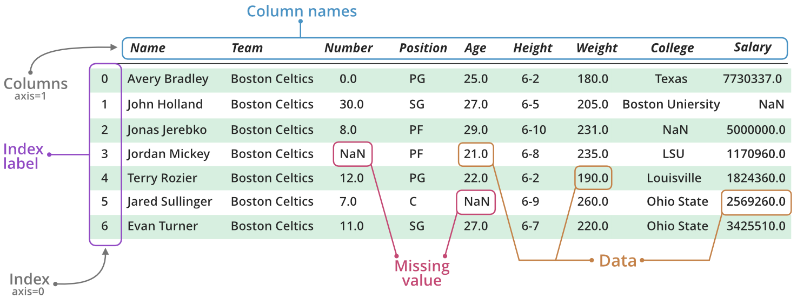
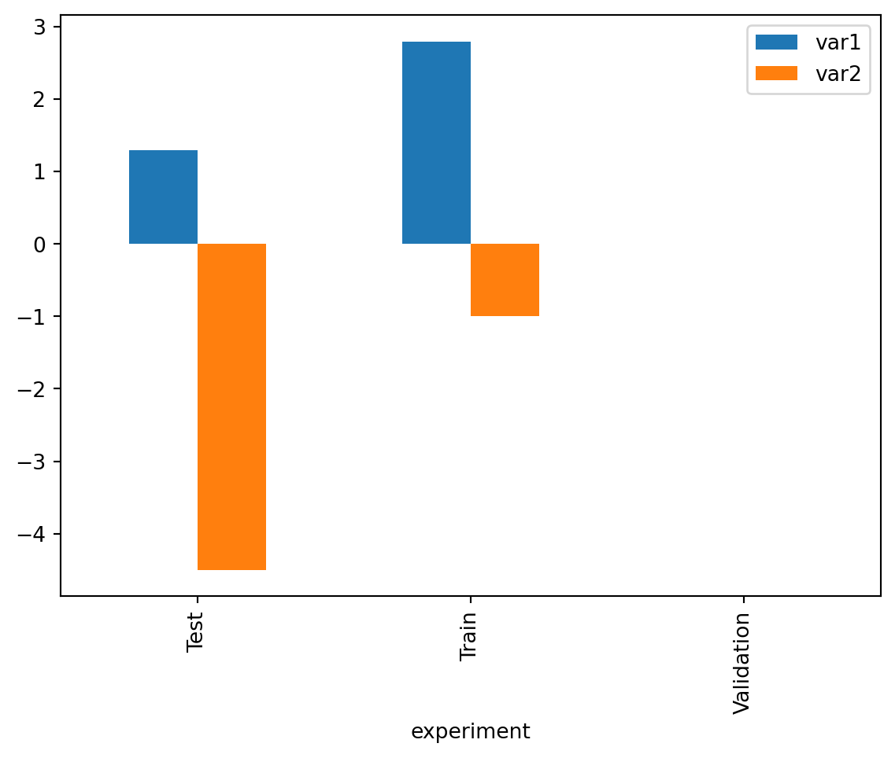
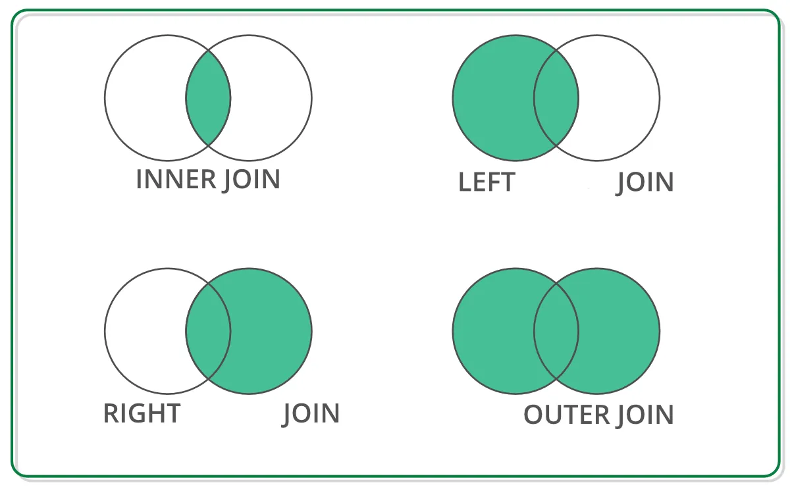

import pandas as pd
import numpy as npWorking with tabular data using Pandas
Statistical analysis is generally based on tabular data, where each row represents an observation and each column a variable. To handle this type of data and easily apply standard data analysis methods, dedicated objects have been designed: DataFrames. Users of R are well acquainted with this data structure, which is native to this statistics-oriented language. In Python, a general-purpose language, this object does not exist natively. Fortunately, a very comprehensive and convenient library, designed as an overlay to NumPy, introduces the DataFrame object in Python and allows for simple and intuitive data manipulation and analysis: Pandas.
Note
Pandas is the central element of the data science ecosystem in Python, offering virtually infinite data processing capabilities. Moreover, there are generally multiple ways to perform the same operation in Pandas. Consequently, this chapter is particularly long and dense with new features. The goal is not to memorize all the methods presented throughout this chapter, but rather to have a general overview of what is possible in order to use the right tools in projects. In particular, the end-of-chapter exercises and the mini-projects at the end of the course will provide an opportunity to apply this new knowledge to concrete problems.
Let’s start by importing the Pandas library. The common usage is to give it the alias pd to simplify future calls to the package’s objects and functions. We also import NumPy as we will compare the fundamental objects of the two packages.
Data structures
To fully understand how Pandas works, it is important to focus on its fundamental objects. We will therefore first study the Series, whose concatenation allows us to build a DataFrame.
The Series
A Series is a one-dimensional data container that can hold any type of data (integers, strings, Python objects…). However, a Series is of a given type: a Series containing only integers will be of type int, and a Series containing objects of different natures will be of type object. Let’s build our first Series from a list to check this behavior.
l = [1, "X", 3]
s = pd.Series(l)
print(s)0 1
1 X
2 3
dtype: objectIn particular, we can access the data of a Series by position, as for a list or an array.
print(s[1])XAt first glance, we do not see much difference between a Series and a one-dimensional NumPy array. However, there is a significant difference: the presence of an index. The observations have an associated label. When we create a Series without specifying anything, the index is automatically set to the integers from 0 to n-1 (with n being the number of elements in the Series). But it is possible to pass a specific index (e.g., dates, town names, etc.).
s = pd.Series(l, index=["a", "b", "c"])
print(s)a 1
b X
c 3
dtype: objectThis allows us to access the data by label:
s["b"]'X'This difference may seem minor at first, but it becomes essential for constructing the DataFrame. For the rest, Series behave very similarly to NumPy arrays: calculations are vectorized, we can directly sum two Series, etc. Moreover, we can easily convert a Series into an array via the values attribute. This naturally loses the index…
s = pd.Series(l, index=["a", "b", "c"])
s.valuesarray([1, 'X', 3], dtype=object)The DataFrame
Fundamentally, a DataFrame consists of a collection of Series, aligned by their indexes. This concatenation thus constructs a data table, with Series corresponding to columns, and the index identifying the rows. The following figure (source) helps to understand this data structure.

A DataFrame can be constructed in multiple ways. In practice, we generally build a DataFrame directly from tabular data files (e.g., CSV, Excel), rarely by hand. So, we will only illustrate the most common manual construction method: from a data dictionary.
df = pd.DataFrame(
data = {
"var1": [1.3, 5.6, np.nan, np.nan, 0, np.nan],
"var2": np.random.randint(-10, 10, 6),
"experiment": ["test", "train", "test", "train", "train", "validation"],
"date": ["2022-01-01", "2022-01-02", "2022-01-03", "2022-01-04", "2022-01-05", "2022-01-06"],
"sample": "sample1"
}
)
df| var1 | var2 | experiment | date | sample | |
|---|---|---|---|---|---|
| 0 | 1.3 | -8 | test | 2022-01-01 | sample1 |
| 1 | 5.6 | 9 | train | 2022-01-02 | sample1 |
| 2 | NaN | 4 | test | 2022-01-03 | sample1 |
| 3 | NaN | -3 | train | 2022-01-04 | sample1 |
| 4 | 0.0 | 9 | train | 2022-01-05 | sample1 |
| 5 | NaN | -4 | validation | 2022-01-06 | sample1 |
A Pandas DataFrame has a set of useful attributes that we will discover throughout this tutorial. For now, let’s focus on the most basic ones: the index and the column names. By default, the index is initialized, as for Series, to the list of positions of the observations. We could have specified an alternative index when constructing the DataFrame by specifying the index argument of the pd.DataFrame function.
df.indexRangeIndex(start=0, stop=6, step=1)df.columnsIndex(['var1', 'var2', 'experiment', 'date', 'sample'], dtype='object')Often, rather than specifying an index manually during the construction of the DataFrame, we will want to use a certain column of the DataFrame as an index. We use the set_index method associated with DataFrames for this.
df = df.set_index("date")
df| var1 | var2 | experiment | sample | |
|---|---|---|---|---|
| date | ||||
| 2022-01-01 | 1.3 | -8 | test | sample1 |
| 2022-01-02 | 5.6 | 9 | train | sample1 |
| 2022-01-03 | NaN | 4 | test | sample1 |
| 2022-01-04 | NaN | -3 | train | sample1 |
| 2022-01-05 | 0.0 | 9 | train | sample1 |
| 2022-01-06 | NaN | -4 | validation | sample1 |
The index attribute has naturally changed:
df.indexIndex(['2022-01-01', '2022-01-02', '2022-01-03', '2022-01-04', '2022-01-05',
'2022-01-06'],
dtype='object', name='date')Selecting data
When manipulating tabular data, it is common to want to extract specific columns from a DataFrame. This extraction is simple with Pandas using square brackets.
Selecting columns
Selecting a single column
To extract a single column, we can use the following syntax:
selected_column = df["var1"]
selected_columndate
2022-01-01 1.3
2022-01-02 5.6
2022-01-03 NaN
2022-01-04 NaN
2022-01-05 0.0
2022-01-06 NaN
Name: var1, dtype: float64The selected_column object here returns the column named var1 from the DataFrame df. But what type is this object? To answer this question, we use the type() function:
type(selected_column)pandas.core.series.SeriesAs we can see, the result is a Series, which is a one-dimensional object in Pandas.
Another useful attribute to know is shape. It allows us to know the dimension of the object. For a Series, shape will return a tuple whose first element indicates the number of rows.
selected_column.shape(6,)Selecting multiple columns
To extract multiple columns, just pass a list of the desired column names:
selected_columns = df[["var1", "var2", "experiment"]]
selected_columns| var1 | var2 | experiment | |
|---|---|---|---|
| date | |||
| 2022-01-01 | 1.3 | -8 | test |
| 2022-01-02 | 5.6 | 9 | train |
| 2022-01-03 | NaN | 4 | test |
| 2022-01-04 | NaN | -3 | train |
| 2022-01-05 | 0.0 | 9 | train |
| 2022-01-06 | NaN | -4 | validation |
This snippet shows the columns var1, var2, and experiment from the DataFrame df. Let’s now check its type:
type(selected_columns)pandas.core.frame.DataFrameThe result is a DataFrame because it is a two-dimensional object. We can also check its shape with the shape attribute. In this case, the tuple returned by shape will contain two elements: the number of rows and the number of columns.
selected_columns.shape(6, 3)Selecting rows
Using loc and iloc
When we want to select specific rows in a DataFrame, we can use two main methods: loc and iloc.
ilocallows selecting rows and columns by their position, i.e., by numeric indices.
Example, selecting the first 3 rows:
df.iloc[0:3, :]| var1 | var2 | experiment | sample | |
|---|---|---|---|---|
| date | ||||
| 2022-01-01 | 1.3 | -8 | test | sample1 |
| 2022-01-02 | 5.6 | 9 | train | sample1 |
| 2022-01-03 | NaN | 4 | test | sample1 |
locworks with labels. If the DataFrame’s indexes are numbers, they resemble positions, but this is not necessarily the case. It is crucial to note that, unlikeiloc, withloc, the end index is included in the selection.
df.loc["2022-01-01":"2022-01-03", :]| var1 | var2 | experiment | sample | |
|---|---|---|---|---|
| date | ||||
| 2022-01-01 | 1.3 | -8 | test | sample1 |
| 2022-01-02 | 5.6 | 9 | train | sample1 |
| 2022-01-03 | NaN | 4 | test | sample1 |
Filtering data based on conditions
In practice, rather than selecting rows based on positions or labels, we often want to filter a DataFrame based on certain conditions. In this case, we primarily use boolean filters.
- Inequalities: We might want to keep only the rows that meet a certain condition.
Example, filtering rows where the value of the var2 column is greater than 0:
df[df['var2'] >= 0]| var1 | var2 | experiment | sample | |
|---|---|---|---|---|
| date | ||||
| 2022-01-02 | 5.6 | 9 | train | sample1 |
| 2022-01-03 | NaN | 4 | test | sample1 |
| 2022-01-05 | 0.0 | 9 | train | sample1 |
- Membership with
isin: If we want to filter data based on a list of possible values, theisinmethod is very useful.
Example, to keep only the rows where the experiment column has values ‘test’ or ‘validation’:
df[df['experiment'].isin(['train', 'validation'])]| var1 | var2 | experiment | sample | |
|---|---|---|---|---|
| date | ||||
| 2022-01-02 | 5.6 | 9 | train | sample1 |
| 2022-01-04 | NaN | -3 | train | sample1 |
| 2022-01-05 | 0.0 | 9 | train | sample1 |
| 2022-01-06 | NaN | -4 | validation | sample1 |
These methods can be combined to create more complex conditions. It is also possible to use logical operators (& for “and”, | for “or”) to combine multiple conditions. Be careful to enclose each condition in parentheses when combining them.
Example, selecting rows where var2 is greater than 0 and experiment is equal to ‘test’ or ‘validation’:
df[(df['var2'] >= 0) & (df['experiment'].isin(['train', 'validation']))]| var1 | var2 | experiment | sample | |
|---|---|---|---|---|
| date | ||||
| 2022-01-02 | 5.6 | 9 | train | sample1 |
| 2022-01-05 | 0.0 | 9 | train | sample1 |
Exploring tabular data
In public statistics, the starting point is generally not the manual generation of data but rather pre-existing tab
ular files. These files, whether from surveys, administrative databases, or other sources, constitute the raw material for any subsequent analysis. Pandas offers powerful tools to import these tabular files and explore them for further manipulations.
Importing and exporting data
Importing a CSV file
As we saw in a previous lab, the CSV format is one of the most common formats for storing tabular data. We previously used the csv library to handle them as text files, but it was not very convenient. To recall, the syntax for reading a CSV file and displaying the first lines was as follows:
import csv
rows = []
with open("data/departement2021.csv") as file_in:
csv_reader = csv.reader(file_in)
for row in csv_reader:
rows.append(row)
rows[:5][['DEP', 'REG', 'CHEFLIEU', 'TNCC', 'NCC', 'NCCENR', 'LIBELLE'],
['01', '84', '01053', '5', 'AIN', 'Ain', 'Ain'],
['02', '32', '02408', '5', 'AISNE', 'Aisne', 'Aisne'],
['03', '84', '03190', '5', 'ALLIER', 'Allier', 'Allier'],
['04',
'93',
'04070',
'4',
'ALPES DE HAUTE PROVENCE',
'Alpes-de-Haute-Provence',
'Alpes-de-Haute-Provence']]With Pandas, just use the read_csv() function to import the file as a DataFrame, then the head() function.
df_departements = pd.read_csv('data/departement2021.csv')
df_departements.head()| DEP | REG | CHEFLIEU | TNCC | NCC | NCCENR | LIBELLE | |
|---|---|---|---|---|---|---|---|
| 0 | 01 | 84 | 01053 | 5 | AIN | Ain | Ain |
| 1 | 02 | 32 | 02408 | 5 | AISNE | Aisne | Aisne |
| 2 | 03 | 84 | 03190 | 5 | ALLIER | Allier | Allier |
| 3 | 04 | 93 | 04070 | 4 | ALPES DE HAUTE PROVENCE | Alpes-de-Haute-Provence | Alpes-de-Haute-Provence |
| 4 | 05 | 93 | 05061 | 4 | HAUTES ALPES | Hautes-Alpes | Hautes-Alpes |
It is also possible to import a CSV file directly from a URL. This is particularly convenient when the data is regularly updated on a website, and we want to access the latest version without manually downloading the file each time. Let’s take the example of a CSV file available on the INSEE website: the file of given names, from civil status data. We also note another handy feature: the CSV file is compressed (in zip format), but Pandas can recognize and decompress it before importing.
# Importing a CSV file from a URL
url = "https://www.insee.fr/fr/statistiques/fichier/2540004/nat2021_csv.zip"
df_prenoms_url = pd.read_csv(url, sep=";")
df_prenoms_url.head()| sexe | preusuel | annais | nombre | |
|---|---|---|---|---|
| 0 | 1 | _PRENOMS_RARES | 1900 | 1249 |
| 1 | 1 | _PRENOMS_RARES | 1901 | 1342 |
| 2 | 1 | _PRENOMS_RARES | 1902 | 1330 |
| 3 | 1 | _PRENOMS_RARES | 1903 | 1286 |
| 4 | 1 | _PRENOMS_RARES | 1904 | 1430 |
When working with CSV files, there are many optional arguments available in the read_csv() function that allow us to adjust the import process according to the specifics of the file. These arguments can, for example, define a specific delimiter (as above for the given names file), skip certain lines at the beginning of the file, or define data types for each column, and many others. All these parameters and their usage are detailed in the official documentation.
Exporting to CSV format
Once the data has been processed and modified within Pandas, it is common to want to export the result as a CSV file for sharing, archiving, or use in other tools. Pandas offers a simple method for this operation: to_csv(). Suppose we want to export the data from the df_departements DataFrame specific to the five overseas departments.
df_departements_dom = df_departements[df_departements["DEP"].isin(["971", "972", "973", "974", "975"])]
df_departements_dom.to_csv('output/departements2021_dom.csv')--------------------------------------------------------------------------- OSError Traceback (most recent call last) Cell In[163], line 2 1 df_departements_dom = df_departements[df_departements["DEP"].isin(["971", "972", "973", "974", "975"])] ----> 2 df_departements_dom.to_csv('output/departements2021_dom.csv') File /opt/hostedtoolcache/Python/3.10.14/x64/lib/python3.10/site-packages/pandas/util/_decorators.py:333, in deprecate_nonkeyword_arguments.<locals>.decorate.<locals>.wrapper(*args, **kwargs) 327 if len(args) > num_allow_args: 328 warnings.warn( 329 msg.format(arguments=_format_argument_list(allow_args)), 330 FutureWarning, 331 stacklevel=find_stack_level(), 332 ) --> 333 return func(*args, **kwargs) File /opt/hostedtoolcache/Python/3.10.14/x64/lib/python3.10/site-packages/pandas/core/generic.py:3967, in NDFrame.to_csv(self, path_or_buf, sep, na_rep, float_format, columns, header, index, index_label, mode, encoding, compression, quoting, quotechar, lineterminator, chunksize, date_format, doublequote, escapechar, decimal, errors, storage_options) 3956 df = self if isinstance(self, ABCDataFrame) else self.to_frame() 3958 formatter = DataFrameFormatter( 3959 frame=df, 3960 header=header, (...) 3964 decimal=decimal, 3965 ) -> 3967 return DataFrameRenderer(formatter).to_csv( 3968 path_or_buf, 3969 lineterminator=lineterminator, 3970 sep=sep, 3971 encoding=encoding, 3972 errors=errors, 3973 compression=compression, 3974 quoting=quoting, 3975 columns=columns, 3976 index_label=index_label, 3977 mode=mode, 3978 chunksize=chunksize, 3979 quotechar=quotechar, 3980 date_format=date_format, 3981 doublequote=doublequote, 3982 escapechar=escapechar, 3983 storage_options=storage_options, 3984 ) File /opt/hostedtoolcache/Python/3.10.14/x64/lib/python3.10/site-packages/pandas/io/formats/format.py:1014, in DataFrameRenderer.to_csv(self, path_or_buf, encoding, sep, columns, index_label, mode, compression, quoting, quotechar, lineterminator, chunksize, date_format, doublequote, escapechar, errors, storage_options) 993 created_buffer = False 995 csv_formatter = CSVFormatter( 996 path_or_buf=path_or_buf, 997 lineterminator=lineterminator, (...) 1012 formatter=self.fmt, 1013 ) -> 1014 csv_formatter.save() 1016 if created_buffer: 1017 assert isinstance(path_or_buf, StringIO) File /opt/hostedtoolcache/Python/3.10.14/x64/lib/python3.10/site-packages/pandas/io/formats/csvs.py:251, in CSVFormatter.save(self) 247 """ 248 Create the writer & save. 249 """ 250 # apply compression and byte/text conversion --> 251 with get_handle( 252 self.filepath_or_buffer, 253 self.mode, 254 encoding=self.encoding, 255 errors=self.errors, 256 compression=self.compression, 257 storage_options=self.storage_options, 258 ) as handles: 259 # Note: self.encoding is irrelevant here 260 self.writer = csvlib.writer( 261 handles.handle, 262 lineterminator=self.lineterminator, (...) 267 quotechar=self.quotechar, 268 ) 270 self._save() File /opt/hostedtoolcache/Python/3.10.14/x64/lib/python3.10/site-packages/pandas/io/common.py:749, in get_handle(path_or_buf, mode, encoding, compression, memory_map, is_text, errors, storage_options) 747 # Only for write methods 748 if "r" not in mode and is_path: --> 749 check_parent_directory(str(handle)) 751 if compression: 752 if compression != "zstd": 753 # compression libraries do not like an explicit text-mode File /opt/hostedtoolcache/Python/3.10.14/x64/lib/python3.10/site-packages/pandas/io/common.py:616, in check_parent_directory(path) 614 parent = Path(path).parent 615 if not parent.is_dir(): --> 616 raise OSError(rf"Cannot save file into a non-existent directory: '{parent}'") OSError: Cannot save file into a non-existent directory: 'output'
One of the key arguments of the to_csv() method is index. By default, index=True, which means that the DataFrame’s index will also be written in the CSV file. We can verify this by printing the first lines of our CSV file: Pandas has added an unnamed column, which contains the index of the retained rows.
with open("output/departements2021_dom.csv") as file_in:
for i in range(5):
row = next(file_in).strip()
print(row)--------------------------------------------------------------------------- FileNotFoundError Traceback (most recent call last) Cell In[164], line 1 ----> 1 with open("output/departements2021_dom.csv") as file_in: 2 for i in range(5): 3 row = next(file_in).strip() File /opt/hostedtoolcache/Python/3.10.14/x64/lib/python3.10/site-packages/IPython/core/interactiveshell.py:324, in _modified_open(file, *args, **kwargs) 317 if file in {0, 1, 2}: 318 raise ValueError( 319 f"IPython won't let you open fd={file} by default " 320 "as it is likely to crash IPython. If you know what you are doing, " 321 "you can use builtins' open." 322 ) --> 324 return io_open(file, *args, **kwargs) FileNotFoundError: [Errno 2] No such file or directory: 'output/departements2021_dom.csv'
In some cases, notably when the index does not provide useful information or is simply automatically generated by Pandas, we might want to exclude it from the exported file. To do this, we can set index=False.
df_departements_dom.to_csv('output/departements2021_dom_noindex.csv', index=False)--------------------------------------------------------------------------- OSError Traceback (most recent call last) Cell In[165], line 1 ----> 1 df_departements_dom.to_csv('output/departements2021_dom_noindex.csv', index=False) File /opt/hostedtoolcache/Python/3.10.14/x64/lib/python3.10/site-packages/pandas/util/_decorators.py:333, in deprecate_nonkeyword_arguments.<locals>.decorate.<locals>.wrapper(*args, **kwargs) 327 if len(args) > num_allow_args: 328 warnings.warn( 329 msg.format(arguments=_format_argument_list(allow_args)), 330 FutureWarning, 331 stacklevel=find_stack_level(), 332 ) --> 333 return func(*args, **kwargs) File /opt/hostedtoolcache/Python/3.10.14/x64/lib/python3.10/site-packages/pandas/core/generic.py:3967, in NDFrame.to_csv(self, path_or_buf, sep, na_rep, float_format, columns, header, index, index_label, mode, encoding, compression, quoting, quotechar, lineterminator, chunksize, date_format, doublequote, escapechar, decimal, errors, storage_options) 3956 df = self if isinstance(self, ABCDataFrame) else self.to_frame() 3958 formatter = DataFrameFormatter( 3959 frame=df, 3960 header=header, (...) 3964 decimal=decimal, 3965 ) -> 3967 return DataFrameRenderer(formatter).to_csv( 3968 path_or_buf, 3969 lineterminator=lineterminator, 3970 sep=sep, 3971 encoding=encoding, 3972 errors=errors, 3973 compression=compression, 3974 quoting=quoting, 3975 columns=columns, 3976 index_label=index_label, 3977 mode=mode, 3978 chunksize=chunksize, 3979 quotechar=quotechar, 3980 date_format=date_format, 3981 doublequote=doublequote, 3982 escapechar=escapechar, 3983 storage_options=storage_options, 3984 ) File /opt/hostedtoolcache/Python/3.10.14/x64/lib/python3.10/site-packages/pandas/io/formats/format.py:1014, in DataFrameRenderer.to_csv(self, path_or_buf, encoding, sep, columns, index_label, mode, compression, quoting, quotechar, lineterminator, chunksize, date_format, doublequote, escapechar, errors, storage_options) 993 created_buffer = False 995 csv_formatter = CSVFormatter( 996 path_or_buf=path_or_buf, 997 lineterminator=lineterminator, (...) 1012 formatter=self.fmt, 1013 ) -> 1014 csv_formatter.save() 1016 if created_buffer: 1017 assert isinstance(path_or_buf, StringIO) File /opt/hostedtoolcache/Python/3.10.14/x64/lib/python3.10/site-packages/pandas/io/formats/csvs.py:251, in CSVFormatter.save(self) 247 """ 248 Create the writer & save. 249 """ 250 # apply compression and byte/text conversion --> 251 with get_handle( 252 self.filepath_or_buffer, 253 self.mode, 254 encoding=self.encoding, 255 errors=self.errors, 256 compression=self.compression, 257 storage_options=self.storage_options, 258 ) as handles: 259 # Note: self.encoding is irrelevant here 260 self.writer = csvlib.writer( 261 handles.handle, 262 lineterminator=self.lineterminator, (...) 267 quotechar=self.quotechar, 268 ) 270 self._save() File /opt/hostedtoolcache/Python/3.10.14/x64/lib/python3.10/site-packages/pandas/io/common.py:749, in get_handle(path_or_buf, mode, encoding, compression, memory_map, is_text, errors, storage_options) 747 # Only for write methods 748 if "r" not in mode and is_path: --> 749 check_parent_directory(str(handle)) 751 if compression: 752 if compression != "zstd": 753 # compression libraries do not like an explicit text-mode File /opt/hostedtoolcache/Python/3.10.14/x64/lib/python3.10/site-packages/pandas/io/common.py:616, in check_parent_directory(path) 614 parent = Path(path).parent 615 if not parent.is_dir(): --> 616 raise OSError(rf"Cannot save file into a non-existent directory: '{parent}'") OSError: Cannot save file into a non-existent directory: 'output'
Importing a Parquet file
The Parquet format is another format for storing tabular data, increasingly used. Without going into technical details, the Parquet format has various characteristics that make it a preferred choice for storing and processing large volumes of data. Due to these advantages, this format is increasingly used for data dissemination at INSEE. It is therefore essential to know how to import and query Parquet files with Pandas.
Importing a Parquet file into a Pandas DataFrame is as easy as for a CSV file. The function is called read_parquet().
df_departements = pd.read_parquet('data/departement2021.parquet')
df_departements.head()| DEP | REG | CHEFLIEU | TNCC | NCC | NCCENR | LIBELLE | |
|---|---|---|---|---|---|---|---|
| 0 | 01 | 84 | 01053 | 5 | AIN | Ain | Ain |
| 1 | 02 | 32 | 02408 | 5 | AISNE | Aisne | Aisne |
| 2 | 03 | 84 | 03190 | 5 | ALLIER | Allier | Allier |
| 3 | 04 | 93 | 04070 | 4 | ALPES DE HAUTE PROVENCE | Alpes-de-Haute-Provence | Alpes-de-Haute-Provence |
| 4 | 05 | 93 | 05061 | 4 | HAUTES ALPES | Hautes-Alpes | Hautes-Alpes |
Exporting to Parquet format
Again, everything works as in the CSV world: we use the to_parquet() method to export a DataFrame to a Parquet file. Similarly, we can choose to export or not the index, using the index parameter (which defaults to True).
df_departements_dom = df_departements[df_departements["DEP"].isin(["971", "972", "973", "974", "975"])]
df_departements_dom.to_parquet('output/departements2021_dom.parquet', index=False)--------------------------------------------------------------------------- OSError Traceback (most recent call last) Cell In[167], line 2 1 df_departements_dom = df_departements[df_departements["DEP"].isin(["971", "972", "973", "974", "975"])] ----> 2 df_departements_dom.to_parquet('output/departements2021_dom.parquet', index=False) File /opt/hostedtoolcache/Python/3.10.14/x64/lib/python3.10/site-packages/pandas/util/_decorators.py:333, in deprecate_nonkeyword_arguments.<locals>.decorate.<locals>.wrapper(*args, **kwargs) 327 if len(args) > num_allow_args: 328 warnings.warn( 329 msg.format(arguments=_format_argument_list(allow_args)), 330 FutureWarning, 331 stacklevel=find_stack_level(), 332 ) --> 333 return func(*args, **kwargs) File /opt/hostedtoolcache/Python/3.10.14/x64/lib/python3.10/site-packages/pandas/core/frame.py:3113, in DataFrame.to_parquet(self, path, engine, compression, index, partition_cols, storage_options, **kwargs) 3032 """ 3033 Write a DataFrame to the binary parquet format. 3034 (...) 3109 >>> content = f.read() 3110 """ 3111 from pandas.io.parquet import to_parquet -> 3113 return to_parquet( 3114 self, 3115 path, 3116 engine, 3117 compression=compression, 3118 index=index, 3119 partition_cols=partition_cols, 3120 storage_options=storage_options, 3121 **kwargs, 3122 ) File /opt/hostedtoolcache/Python/3.10.14/x64/lib/python3.10/site-packages/pandas/io/parquet.py:480, in to_parquet(df, path, engine, compression, index, storage_options, partition_cols, filesystem, **kwargs) 476 impl = get_engine(engine) 478 path_or_buf: FilePath | WriteBuffer[bytes] = io.BytesIO() if path is None else path --> 480 impl.write( 481 df, 482 path_or_buf, 483 compression=compression, 484 index=index, 485 partition_cols=partition_cols, 486 storage_options=storage_options, 487 filesystem=filesystem, 488 **kwargs, 489 ) 491 if path is None: 492 assert isinstance(path_or_buf, io.BytesIO) File /opt/hostedtoolcache/Python/3.10.14/x64/lib/python3.10/site-packages/pandas/io/parquet.py:198, in PyArrowImpl.write(self, df, path, compression, index, storage_options, partition_cols, filesystem, **kwargs) 195 merged_metadata = {**existing_metadata, **df_metadata} 196 table = table.replace_schema_metadata(merged_metadata) --> 198 path_or_handle, handles, filesystem = _get_path_or_handle( 199 path, 200 filesystem, 201 storage_options=storage_options, 202 mode="wb", 203 is_dir=partition_cols is not None, 204 ) 205 if ( 206 isinstance(path_or_handle, io.BufferedWriter) 207 and hasattr(path_or_handle, "name") 208 and isinstance(path_or_handle.name, (str, bytes)) 209 ): 210 if isinstance(path_or_handle.name, bytes): File /opt/hostedtoolcache/Python/3.10.14/x64/lib/python3.10/site-packages/pandas/io/parquet.py:140, in _get_path_or_handle(path, fs, storage_options, mode, is_dir) 130 handles = None 131 if ( 132 not fs 133 and not is_dir (...) 138 # fsspec resources can also point to directories 139 # this branch is used for example when reading from non-fsspec URLs --> 140 handles = get_handle( 141 path_or_handle, mode, is_text=False, storage_options=storage_options 142 ) 143 fs = None 144 path_or_handle = handles.handle File /opt/hostedtoolcache/Python/3.10.14/x64/lib/python3.10/site-packages/pandas/io/common.py:749, in get_handle(path_or_buf, mode, encoding, compression, memory_map, is_text, errors, storage_options) 747 # Only for write methods 748 if "r" not in mode and is_path: --> 749 check_parent_directory(str(handle)) 751 if compression: 752 if compression != "zstd": 753 # compression libraries do not like an explicit text-mode File /opt/hostedtoolcache/Python/3.10.14/x64/lib/python3.10/site-packages/pandas/io/common.py:616, in check_parent_directory(path) 614 parent = Path(path).parent 615 if not parent.is_dir(): --> 616 raise OSError(rf"Cannot save file into a non-existent directory: '{parent}'") OSError: Cannot save file into a non-existent directory: 'output'
One of the major strengths of the Parquet format, compared to text formats like CSV, is its ability to store metadata, i.e., data that helps better understand the data contained in the file. In particular, a Parquet file includes in its metadata the data schema (variable names, variable types, etc.), making it a very suitable format for data dissemination. Let’s verify this behavior by revisiting the DataFrame we defined earlier.
df = pd.DataFrame(
data = {
"var1": [1.3, 5.6, np.nan, np.nan, 0, np.nan],
"var2": np.random.randint(-10, 10, 6),
"experiment": ["test", "train", "test", "train", "train", "validation"],
"date": ["2022-01-01", "2022-01-02", "2022-01-03", "2022-01-04", "2022-01-05", "2022-01-06"],
"sample": "sample1"
}
)
df = df.assign(
experiment=pd.Categorical(df["experiment"]),
date=pd.to_datetime(df["date"])
)This time, we use two specific data types, for categorical data (category) and for temporal data (datetime). We will see later in the tutorial how to use these types. For now, let’s simply note that Pandas stores these types in the data schema.
df.info()<class 'pandas.core.frame.DataFrame'>
RangeIndex: 6 entries, 0 to 5
Data columns (total 5 columns):
# Column Non-Null Count Dtype
--- ------ -------------- -----
0 var1 3 non-null float64
1 var2 6 non-null int64
2 experiment 6 non-null category
3 date 6 non-null datetime64[ns]
4 sample 6 non-null object
dtypes: category(1), datetime64[ns](1), float64(1), int64(1), object(1)
memory usage: 458.0+ bytesLet’s now verify that exporting and re-importing this data in Parquet preserves the schema.
df.to_parquet("output/df_test_schema.parquet", index=False)
df_test_schema_parquet = pd.read_parquet('output/df_test_schema.parquet')
df_test_schema_parquet.info()--------------------------------------------------------------------------- OSError Traceback (most recent call last) Cell In[170], line 1 ----> 1 df.to_parquet("output/df_test_schema.parquet", index=False) 2 df_test_schema_parquet = pd.read_parquet('output/df_test_schema.parquet') 4 df_test_schema_parquet.info() File /opt/hostedtoolcache/Python/3.10.14/x64/lib/python3.10/site-packages/pandas/util/_decorators.py:333, in deprecate_nonkeyword_arguments.<locals>.decorate.<locals>.wrapper(*args, **kwargs) 327 if len(args) > num_allow_args: 328 warnings.warn( 329 msg.format(arguments=_format_argument_list(allow_args)), 330 FutureWarning, 331 stacklevel=find_stack_level(), 332 ) --> 333 return func(*args, **kwargs) File /opt/hostedtoolcache/Python/3.10.14/x64/lib/python3.10/site-packages/pandas/core/frame.py:3113, in DataFrame.to_parquet(self, path, engine, compression, index, partition_cols, storage_options, **kwargs) 3032 """ 3033 Write a DataFrame to the binary parquet format. 3034 (...) 3109 >>> content = f.read() 3110 """ 3111 from pandas.io.parquet import to_parquet -> 3113 return to_parquet( 3114 self, 3115 path, 3116 engine, 3117 compression=compression, 3118 index=index, 3119 partition_cols=partition_cols, 3120 storage_options=storage_options, 3121 **kwargs, 3122 ) File /opt/hostedtoolcache/Python/3.10.14/x64/lib/python3.10/site-packages/pandas/io/parquet.py:480, in to_parquet(df, path, engine, compression, index, storage_options, partition_cols, filesystem, **kwargs) 476 impl = get_engine(engine) 478 path_or_buf: FilePath | WriteBuffer[bytes] = io.BytesIO() if path is None else path --> 480 impl.write( 481 df, 482 path_or_buf, 483 compression=compression, 484 index=index, 485 partition_cols=partition_cols, 486 storage_options=storage_options, 487 filesystem=filesystem, 488 **kwargs, 489 ) 491 if path is None: 492 assert isinstance(path_or_buf, io.BytesIO) File /opt/hostedtoolcache/Python/3.10.14/x64/lib/python3.10/site-packages/pandas/io/parquet.py:198, in PyArrowImpl.write(self, df, path, compression, index, storage_options, partition_cols, filesystem, **kwargs) 195 merged_metadata = {**existing_metadata, **df_metadata} 196 table = table.replace_schema_metadata(merged_metadata) --> 198 path_or_handle, handles, filesystem = _get_path_or_handle( 199 path, 200 filesystem, 201 storage_options=storage_options, 202 mode="wb", 203 is_dir=partition_cols is not None, 204 ) 205 if ( 206 isinstance(path_or_handle, io.BufferedWriter) 207 and hasattr(path_or_handle, "name") 208 and isinstance(path_or_handle.name, (str, bytes)) 209 ): 210 if isinstance(path_or_handle.name, bytes): File /opt/hostedtoolcache/Python/3.10.14/x64/lib/python3.10/site-packages/pandas/io/parquet.py:140, in _get_path_or_handle(path, fs, storage_options, mode, is_dir) 130 handles = None 131 if ( 132 not fs 133 and not is_dir (...) 138 # fsspec resources can also point to directories 139 # this branch is used for example when reading from non-fsspec URLs --> 140 handles = get_handle( 141 path_or_handle, mode, is_text=False, storage_options=storage_options 142 ) 143 fs = None 144 path_or_handle = handles.handle File /opt/hostedtoolcache/Python/3.10.14/x64/lib/python3.10/site-packages/pandas/io/common.py:749, in get_handle(path_or_buf, mode, encoding, compression, memory_map, is_text, errors, storage_options) 747 # Only for write methods 748 if "r" not in mode and is_path: --> 749 check_parent_directory(str(handle)) 751 if compression: 752 if compression != "zstd": 753 # compression libraries do not like an explicit text-mode File /opt/hostedtoolcache/Python/3.10.14/x64/lib/python3.10/site-packages/pandas/io/common.py:616, in check_parent_directory(path) 614 parent = Path(path).parent 615 if not parent.is_dir(): --> 616 raise OSError(rf"Cannot save file into a non-existent directory: '{parent}'") OSError: Cannot save file into a non-existent directory: 'output'
Conversely, a CSV file, which by definition only contains text, does not preserve this data. The variables for which we specified the type are imported as strings (type object in Pandas).
df.to_csv("output/df_test_schema.csv", index=False)
df_test_schema_csv = pd.read_csv('output/df_test_schema.csv')
df_test_schema_csv.info()--------------------------------------------------------------------------- OSError Traceback (most recent call last) Cell In[171], line 1 ----> 1 df.to_csv("output/df_test_schema.csv", index=False) 2 df_test_schema_csv = pd.read_csv('output/df_test_schema.csv') 4 df_test_schema_csv.info() File /opt/hostedtoolcache/Python/3.10.14/x64/lib/python3.10/site-packages/pandas/util/_decorators.py:333, in deprecate_nonkeyword_arguments.<locals>.decorate.<locals>.wrapper(*args, **kwargs) 327 if len(args) > num_allow_args: 328 warnings.warn( 329 msg.format(arguments=_format_argument_list(allow_args)), 330 FutureWarning, 331 stacklevel=find_stack_level(), 332 ) --> 333 return func(*args, **kwargs) File /opt/hostedtoolcache/Python/3.10.14/x64/lib/python3.10/site-packages/pandas/core/generic.py:3967, in NDFrame.to_csv(self, path_or_buf, sep, na_rep, float_format, columns, header, index, index_label, mode, encoding, compression, quoting, quotechar, lineterminator, chunksize, date_format, doublequote, escapechar, decimal, errors, storage_options) 3956 df = self if isinstance(self, ABCDataFrame) else self.to_frame() 3958 formatter = DataFrameFormatter( 3959 frame=df, 3960 header=header, (...) 3964 decimal=decimal, 3965 ) -> 3967 return DataFrameRenderer(formatter).to_csv( 3968 path_or_buf, 3969 lineterminator=lineterminator, 3970 sep=sep, 3971 encoding=encoding, 3972 errors=errors, 3973 compression=compression, 3974 quoting=quoting, 3975 columns=columns, 3976 index_label=index_label, 3977 mode=mode, 3978 chunksize=chunksize, 3979 quotechar=quotechar, 3980 date_format=date_format, 3981 doublequote=doublequote, 3982 escapechar=escapechar, 3983 storage_options=storage_options, 3984 ) File /opt/hostedtoolcache/Python/3.10.14/x64/lib/python3.10/site-packages/pandas/io/formats/format.py:1014, in DataFrameRenderer.to_csv(self, path_or_buf, encoding, sep, columns, index_label, mode, compression, quoting, quotechar, lineterminator, chunksize, date_format, doublequote, escapechar, errors, storage_options) 993 created_buffer = False 995 csv_formatter = CSVFormatter( 996 path_or_buf=path_or_buf, 997 lineterminator=lineterminator, (...) 1012 formatter=self.fmt, 1013 ) -> 1014 csv_formatter.save() 1016 if created_buffer: 1017 assert isinstance(path_or_buf, StringIO) File /opt/hostedtoolcache/Python/3.10.14/x64/lib/python3.10/site-packages/pandas/io/formats/csvs.py:251, in CSVFormatter.save(self) 247 """ 248 Create the writer & save. 249 """ 250 # apply compression and byte/text conversion --> 251 with get_handle( 252 self.filepath_or_buffer, 253 self.mode, 254 encoding=self.encoding, 255 errors=self.errors, 256 compression=self.compression, 257 storage_options=self.storage_options, 258 ) as handles: 259 # Note: self.encoding is irrelevant here 260 self.writer = csvlib.writer( 261 handles.handle, 262 lineterminator=self.lineterminator, (...) 267 quotechar=self.quotechar, 268 ) 270 self._save() File /opt/hostedtoolcache/Python/3.10.14/x64/lib/python3.10/site-packages/pandas/io/common.py:749, in get_handle(path_or_buf, mode, encoding, compression, memory_map, is_text, errors, storage_options) 747 # Only for write methods 748 if "r" not in mode and is_path: --> 749 check_parent_directory(str(handle)) 751 if compression: 752 if compression != "zstd": 753 # compression libraries do not like an explicit text-mode File /opt/hostedtoolcache/Python/3.10.14/x64/lib/python3.10/site-packages/pandas/io/common.py:616, in check_parent_directory(path) 614 parent = Path(path).parent 615 if not parent.is_dir(): --> 616 raise OSError(rf"Cannot save file into a non-existent directory: '{parent}'") OSError: Cannot save file into a non-existent directory: 'output'
Viewing a sample of data
When working with large datasets, it is often useful to quickly view a sample of the data to get an idea of its structure, format, or even to detect potential problems. Pandas offers several methods for this.
The head() method displays the first rows of the DataFrame. By default, it returns the first 5 rows, but we can specify another number as an argument if necessary.
df_departements.head()| DEP | REG | CHEFLIEU | TNCC | NCC | NCCENR | LIBELLE | |
|---|---|---|---|---|---|---|---|
| 0 | 01 | 84 | 01053 | 5 | AIN | Ain | Ain |
| 1 | 02 | 32 | 02408 | 5 | AISNE | Aisne | Aisne |
| 2 | 03 | 84 | 03190 | 5 | ALLIER | Allier | Allier |
| 3 | 04 | 93 | 04070 | 4 | ALPES DE HAUTE PROVENCE | Alpes-de-Haute-Provence | Alpes-de-Haute-Provence |
| 4 | 05 | 93 | 05061 | 4 | HAUTES ALPES | Hautes-Alpes | Hautes-Alpes |
df_departements.head(10)| DEP | REG | CHEFLIEU | TNCC | NCC | NCCENR | LIBELLE | |
|---|---|---|---|---|---|---|---|
| 0 | 01 | 84 | 01053 | 5 | AIN | Ain | Ain |
| 1 | 02 | 32 | 02408 | 5 | AISNE | Aisne | Aisne |
| 2 | 03 | 84 | 03190 | 5 | ALLIER | Allier | Allier |
| 3 | 04 | 93 | 04070 | 4 | ALPES DE HAUTE PROVENCE | Alpes-de-Haute-Provence | Alpes-de-Haute-Provence |
| 4 | 05 | 93 | 05061 | 4 | HAUTES ALPES | Hautes-Alpes | Hautes-Alpes |
| 5 | 06 | 93 | 06088 | 4 | ALPES MARITIMES | Alpes-Maritimes | Alpes-Maritimes |
| 6 | 07 | 84 | 07186 | 5 | ARDECHE | Ardèche | Ardèche |
| 7 | 08 | 44 | 08105 | 4 | ARDENNES | Ardennes | Ardennes |
| 8 | 09 | 76 | 09122 | 5 | ARIEGE | Ariège | Ariège |
| 9 | 10 | 44 | 10387 | 5 | AUBE | Aube | Aube |
Conversely, the tail() method gives a preview of the last rows of the DataFrame.
df_departements.tail()| DEP | REG | CHEFLIEU | TNCC | NCC | NCCENR | LIBELLE | |
|---|---|---|---|---|---|---|---|
| 96 | 971 | 1 | 97105 | 3 | GUADELOUPE | Guadeloupe | Guadeloupe |
| 97 | 972 | 2 | 97209 | 3 | MARTINIQUE | Martinique | Martinique |
| 98 | 973 | 3 | 97302 | 3 | GUYANE | Guyane | Guyane |
| 99 | 974 | 4 | 97411 | 0 | LA REUNION | La Réunion | La Réunion |
| 100 | 976 | 6 | 97608 | 0 | MAYOTTE | Mayotte | Mayotte |
Displaying the first or last rows may sometimes not be representative of the entire dataset, especially when the data is sorted. To minimize the risk of obtaining a biased overview of the data, we can use the sample() method, which selects a random sample of rows. By default, it returns a single row, but we can request a specific number of rows using the n argument.
df_departements.sample(n=5)| DEP | REG | CHEFLIEU | TNCC | NCC | NCCENR | LIBELLE | |
|---|---|---|---|---|---|---|---|
| 25 | 27 | 28 | 27229 | 5 | EURE | Eure | Eure |
| 65 | 65 | 76 | 65440 | 4 | HAUTES PYRENEES | Hautes-Pyrénées | Hautes-Pyrénées |
| 96 | 971 | 1 | 97105 | 3 | GUADELOUPE | Guadeloupe | Guadeloupe |
| 39 | 39 | 27 | 39300 | 2 | JURA | Jura | Jura |
| 8 | 09 | 76 | 09122 | 5 | ARIEGE | Ariège | Ariège |
Getting an overview of the data
One of the first steps when exploring new data is to understand the general structure of the dataset. The info() method in Pandas provides a quick overview of the data, including data types, the presence of missing values, and memory usage.
df.info()<class 'pandas.core.frame.DataFrame'>
RangeIndex: 6 entries, 0 to 5
Data columns (total 5 columns):
# Column Non-Null Count Dtype
--- ------ -------------- -----
0 var1 3 non-null float64
1 var2 6 non-null int64
2 experiment 6 non-null category
3 date 6 non-null datetime64[ns]
4 sample 6 non-null object
dtypes: category(1), datetime64[ns](1), float64(1), int64(1), object(1)
memory usage: 458.0+ bytesSeveral key pieces of information can be extracted from this result:
index: The DataFrame has a
RangeIndex, which means the index is a simple numeric sequence. Here, the index ranges from 0 to 5, for a total of 6 entries.schema: The list of columns is displayed with very useful information about the data schema:
Non-Null Count: The number of non-missing (non-
nan) values in the column. If this number is less than the total number of entries (in our case, 6), it means the column contains missing values. Note the possible ambiguity on “null”: this indeed means missing values, not values equal to 0. Thus, in our case, the number of “non-null” values for thevar1variable is 5.Dtype: The data type of the column, which helps understand the nature of the information stored in each column. For example,
float64
(real numbers), int32 (integers), category (categorical variable), datetime64[ns] (temporal information), and object (text or mixed data).
Using info() is a quick and effective way to get an overview of a DataFrame, quickly identify columns containing missing values, and understand the data structure.
Calculating descriptive statistics
In addition to the information returned by the info() method, we might want to obtain simple descriptive statistics to quickly visualize the distributions of variables. The describe() method provides a synthetic view of the distribution of data in each column.
df.describe()| var1 | var2 | date | |
|---|---|---|---|
| count | 3.00000 | 6.000000 | 6 |
| mean | 2.30000 | 1.833333 | 2022-01-03 12:00:00 |
| min | 0.00000 | -4.000000 | 2022-01-01 00:00:00 |
| 25% | 0.65000 | -2.250000 | 2022-01-02 06:00:00 |
| 50% | 1.30000 | 1.000000 | 2022-01-03 12:00:00 |
| 75% | 3.45000 | 5.750000 | 2022-01-04 18:00:00 |
| max | 5.60000 | 9.000000 | 2022-01-06 00:00:00 |
| std | 2.93087 | 5.269409 | NaN |
It should be noted that describe() only returns statistics for numeric columns by default. If we want to include columns of other types, we need to specify this via the include argument. For example, df.describe(include='all') will return statistics for all columns, including metrics such as the unique count, the most frequent value, and the frequency of the most frequent value for non-numeric columns.
df.describe(include='all')| var1 | var2 | experiment | date | sample | |
|---|---|---|---|---|---|
| count | 3.00000 | 6.000000 | 6 | 6 | 6 |
| unique | NaN | NaN | 3 | NaN | 1 |
| top | NaN | NaN | train | NaN | sample1 |
| freq | NaN | NaN | 3 | NaN | 6 |
| mean | 2.30000 | 1.833333 | NaN | 2022-01-03 12:00:00 | NaN |
| min | 0.00000 | -4.000000 | NaN | 2022-01-01 00:00:00 | NaN |
| 25% | 0.65000 | -2.250000 | NaN | 2022-01-02 06:00:00 | NaN |
| 50% | 1.30000 | 1.000000 | NaN | 2022-01-03 12:00:00 | NaN |
| 75% | 3.45000 | 5.750000 | NaN | 2022-01-04 18:00:00 | NaN |
| max | 5.60000 | 9.000000 | NaN | 2022-01-06 00:00:00 | NaN |
| std | 2.93087 | 5.269409 | NaN | NaN | NaN |
Note again that the count variable returns the number of non-missing values in each variable.
Main data manipulations
Transforming data
Data transformation operations are essential for shaping, cleaning, and preparing data for analysis. Transformations can apply to the entire DataFrame, specific columns, or specific rows.
Transforming a DataFrame
To transform an entire DataFrame (or a sub-DataFrame), it is possible to use vectorized functions, which allow quickly applying an operation to all elements of the DataFrame. This includes a number of methods available for Series, as well as NumPy mathematical functions, etc.
For example, raising each numeric value in a DataFrame to the power of 2:
df = pd.DataFrame(
data = {
"var1": [1.3, 5.6, np.nan, np.nan, 0, np.nan],
"var2": np.random.randint(-10, 10, 6),
}
)
df ** 2| var1 | var2 | |
|---|---|---|
| 0 | 1.69 | 25 |
| 1 | 31.36 | 4 |
| 2 | NaN | 4 |
| 3 | NaN | 9 |
| 4 | 0.00 | 25 |
| 5 | NaN | 9 |
or taking the absolute value:
np.abs(df)| var1 | var2 | |
|---|---|---|
| 0 | 1.3 | 5 |
| 1 | 5.6 | 2 |
| 2 | NaN | 2 |
| 3 | NaN | 3 |
| 4 | 0.0 | 5 |
| 5 | NaN | 3 |
Some methods available for Series can also be used to transform an entire DataFrame. For example, the very useful replace() method, which allows replacing all occurrences of a given value with another value. For example, suppose the value 0 in the var1 column actually indicates a measurement error. It would be preferable to replace it with a missing value.
df.replace(0, np.nan)| var1 | var2 | |
|---|---|---|
| 0 | 1.3 | -5 |
| 1 | 5.6 | 2 |
| 2 | NaN | 2 |
| 3 | NaN | -3 |
| 4 | NaN | 5 |
| 5 | NaN | -3 |
Assignment or in-place methods?
In the previous example, applying the replace() method does not directly modify the DataFrame. To make the modification persistent, one possibility is to assign the result to an object:
df = df.replace(0, np.nan)A second possibility is, when methods offer it, to use the inplace argument. When inplace=True, the operation is performed “in place”, and the DataFrame is therefore directly modified.
df.replace(0, np.nan, inplace=True)In practice, it is better to limit inplace operations. They do not favor the reproducibility of analyses, as the re-execution of the same cell will give different results each time.
Transforming columns
In some cases, we will not want to apply transformations to the entire data but to specific variables. Transformations possible at the DataFrame level (vectorized functions, methods like replace(), etc.) naturally remain possible at the column level.
df = pd.DataFrame(
data = {
"var1": [1.3, 5.6, np.nan, np.nan, 0, np.nan],
"var2": np.random.randint(-10, 10, 6),
}
)
np.abs(df["var2"])0 5
1 7
2 7
3 4
4 7
5 3
Name: var2, dtype: int64df["var1"].replace(0, np.nan)0 1.3
1 5.6
2 NaN
3 NaN
4 NaN
5 NaN
Name: var1, dtype: float64But there are other transformations that are generally applied at the level of one or a few columns. For example, when the schema has not been properly recognized upon import, it may happen that numeric variables are defined as strings (type object in Pandas).
df = pd.DataFrame(
data = {
"var1": [1.3, 5.6, np.nan],
"var2": ["1", "5", "18"],
}
)
df.info()<class 'pandas.core.frame.DataFrame'>
RangeIndex: 3 entries, 0 to 2
Data columns (total 2 columns):
# Column Non-Null Count Dtype
--- ------ -------------- -----
0 var1 2 non-null float64
1 var2 3 non-null object
dtypes: float64(1), object(1)
memory usage: 176.0+ bytesIn this case, we can use the astype method to convert the column to the desired type.
df['var2'] = df['var2'].astype(int)
df.info()<class 'pandas.core.frame.DataFrame'>
RangeIndex: 3 entries, 0 to 2
Data columns (total 2 columns):
# Column Non-Null Count Dtype
--- ------ -------------- -----
0 var1 2 non-null float64
1 var2 3 non-null int64
dtypes: float64(1), int64(1)
memory usage: 176.0 bytesAnother frequent operation is renaming one or more columns. To do this, we can use the rename() method, passing a dictionary containing as many key-value pairs as variables to be renamed, where each key-value pair is of the form 'old_name': 'new_name'.
df.rename(columns={'var2': 'age'})| var1 | age | |
|---|---|---|
| 0 | 1.3 | 1 |
| 1 | 5.6 | 5 |
| 2 | NaN | 18 |
Finally, we might want to remove columns from the DataFrame that are not or no longer useful for analysis. For this, we use the drop() method, to which we pass either a string (name of a column if we want to remove only one) or a list of column names to remove.
df.drop(columns=['var1'])| var2 | |
|---|---|
| 0 | 1 |
| 1 | 5 |
| 2 | 18 |
Transforming rows
In statistics, we generally apply transformations involving one or more columns. However, in some cases, it is necessary to apply transformations at the row level. For this, we can use the apply() method of Pandas, applied to the row axis (axis=1). Let’s illustrate its operation with a simple case. First, we generate data.
df = pd.DataFrame(
data = {
"var1": [1, 5, 9, 13],
"var2": [3, 7, 11, 15],
"date": ["2022-01-01", "2022-01-02", "2022-01-03", "2022-01-04"],
}
)
df.head()| var1 | var2 | date | |
|---|---|---|---|
| 0 | 1 | 3 | 2022-01-01 |
| 1 | 5 | 7 | 2022-01-02 |
| 2 | 9 | 11 | 2022-01-03 |
| 3 | 13 | 15 | 2022-01-04 |
We now apply the apply() function to the DataFrame to calculate a new variable that is the sum of the two existing ones.
df['sum_row'] = df.apply(lambda row: row['var1'] + row['var2'], axis=1)
df.head()| var1 | var2 | date | sum_row | |
|---|---|---|---|---|
| 0 | 1 | 3 | 2022-01-01 | 4 |
| 1 | 5 | 7 | 2022-01-02 | 12 |
| 2 | 9 | 11 | 2022-01-03 | 20 |
| 3 | 13 | 15 | 2022-01-04 | 28 |
Lambda functions
A lambda function is a small anonymous function. It can take any number of arguments but can have only one expression. In the example above, the lambda function takes a row as an argument and returns the sum of the var1 and var2 columns for that row.
Lambda functions allow defining simple functions “on the fly” without having to give them a name. In our example, this would have been perfectly equivalent to the following code:
def sum_row(row):
return row['var1'] + row['var2']
df['sum_row'] = df.apply(sum_row, axis=1)Although apply() offers great flexibility, it is not the most efficient method, especially for large datasets. Vectorized operations are always preferable as they process data in blocks rather than row by row. In our case, it would have been preferable to create our variable using column operations.
df['sum_row_vect'] = df['var1'] + df['var2']
df.head()| var1 | var2 | date | sum_row | sum_row_vect | |
|---|---|---|---|---|---|
| 0 | 1 | 3 | 2022-01-01 | 4 | 4 |
| 1 | 5 | 7 | 2022-01-02 | 12 | 12 |
| 2 | 9 | 11 | 2022-01-03 | 20 | 20 |
| 3 | 13 | 15 | 2022-01-04 | 28 | 28 |
However, we might find ourselves in certain (rare) cases where an operation cannot be easily vectorized or where the logic is complex. Suppose, for example, we want to combine the values of several columns based on certain conditions.
def combine_columns(row):
if row['var1'] > 6:
return str(row['var2'])
else:
return str(row['var2']) + "_" + row['date']
df['combined_column'] = df.apply(combine_columns, axis=1)
df| var1 | var2 | date | sum_row | sum_row_vect | combined_column | |
|---|---|---|---|---|---|---|
| 0 | 1 | 3 | 2022-01-01 | 4 | 4 | 3_2022-01-01 |
| 1 | 5 | 7 | 2022-01-02 | 12 | 12 | 7_2022-01-02 |
| 2 | 9 | 11 | 2022-01-03 | 20 | 20 | 11 |
| 3 | 13 | 15 | 2022-01-04 | 28 | 28 | 15 |
Sorting values
Sorting data is particularly useful for exploring and visualizing data. With Pandas, we use the sort_values() method to sort the values of a DataFrame based on one or more columns.
df = pd.DataFrame(
data = {
"var1": [1, 5, 9, 13],
"var2": [3, 7, 11, 15],
"date": ["2022-01-01", "2022-01-02", "2022-01-03", "2022-01-04"],
}
)
df| var1 | var2 | date | |
|---|---|---|---|
| 0 | 1 | 3 | 2022-01-01 |
| 1 | 5 | 7 | 2022-01-02 |
| 2 | 9 | 11 | 2022-01-03 |
| 3 | 13 | 15 | 2022-01-04 |
To sort the values based on a single column, just pass the column name as a parameter.
df.sort_values(by='var1')| var1 | var2 | date | |
|---|---|---|---|
| 0 | 1 | 3 | 2022-01-01 |
| 1 | 5 | 7 | 2022-01-02 |
| 2 | 9 | 11 | 2022-01-03 |
| 3 | 13 | 15 | 2022-01-04 |
By default, the sorting is done in ascending
order. To sort the values in descending order, just set ascending=False.
df.sort_values(by='var1', ascending=False)| var1 | var2 | date | |
|---|---|---|---|
| 3 | 13 | 15 | 2022-01-04 |
| 2 | 9 | 11 | 2022-01-03 |
| 1 | 5 | 7 | 2022-01-02 |
| 0 | 1 | 3 | 2022-01-01 |
If we want to sort the DataFrame on multiple columns, we can provide a list of column names. We can also choose to sort in ascending order for some columns and descending order for others.
Aggregating data
Aggregating data is a process where the data is broken down into groups based on certain criteria and then aggregated using an aggregation function applied independently to each group. This operation is common in exploratory analysis or when preprocessing data for visualization or statistical modeling.
df = pd.DataFrame(
data = {
"var1": [1.3, 5.6, np.nan, np.nan, 0, np.nan],
"var2": np.random.randint(-10, 10, 6),
"experiment": ["test", "train", "test", "train", "train", "validation"],
"date": ["2022-01-01", "2022-01-02", "2022-01-03", "2022-01-04", "2022-01-05", "2022-01-06"],
"sample": "sample1"
}
)
df.head()| var1 | var2 | experiment | date | sample | |
|---|---|---|---|---|---|
| 0 | 1.3 | -7 | test | 2022-01-01 | sample1 |
| 1 | 5.6 | 2 | train | 2022-01-02 | sample1 |
| 2 | NaN | 5 | test | 2022-01-03 | sample1 |
| 3 | NaN | 5 | train | 2022-01-04 | sample1 |
| 4 | 0.0 | 4 | train | 2022-01-05 | sample1 |
The groupBy operation
The groupBy method in Pandas allows dividing the DataFrame into subsets based on the values of one or more columns, and then applying an aggregation function to each subset. It returns a DataFrameGroupBy object that is not very useful by itself but is an essential intermediate step to then apply one or more aggregation function(s) to the different groups.
df.groupby('experiment')<pandas.core.groupby.generic.DataFrameGroupBy object at 0x7f46f510f0a0>Aggregation functions
Once the data is grouped, we can apply aggregation functions to obtain a statistical summary. Pandas includes a number of these functions, the complete list of which is detailed in the documentation. Here are some examples of using these methods.
For example, count the number of occurrences in each group.
df.groupby('experiment').size()experiment
test 2
train 3
validation 1
dtype: int64Calculate the sum of a variable by group.
df.groupby('experiment')['var1'].sum()experiment
test 1.3
train 5.6
validation 0.0
Name: var1, dtype: float64Or count the number of unique values of a variable by group. The possibilities are numerous.
# For the number of unique values of 'var2' in each group
df.groupby('experiment')['var2'].nunique()experiment
test 2
train 3
validation 1
Name: var2, dtype: int64When we want to apply multiple aggregation functions at once or custom functions, we use the agg method. This method accepts a list of functions or a dictionary that associates column names with functions to apply. This allows for finer application of aggregation functions.
df.groupby('experiment').agg({'var1': 'mean', 'var2': 'count'})| var1 | var2 | |
|---|---|---|
| experiment | ||
| test | 1.3 | 2 |
| train | 2.8 | 3 |
| validation | NaN | 1 |
Method chaining
The previous examples illustrate an important concept in Pandas: method chaining. This term refers to the possibility of chaining transformations applied to a DataFrame by applying methods to it in a chain. At each applied method, an intermediate DataFrame is created (but not assigned to a variable), which becomes the input of the next method.
Method chaining allows combining several operations into a single code expression. This can improve efficiency by avoiding intermediate assignments and making the code more fluid and readable. It also favors a functional programming style where data flows smoothly through a chain of transformations.
Effects on the index
It is interesting to note the effects of the aggregation process on the DataFrame’s index. The last example above illustrates this well: the groups, i.e., the modalities of the variable used for aggregation, become the values of the index.
We might want to reuse this information in subsequent analyses and therefore want it as a column. For this, just reset the index with the reset_index() method.
df_agg = df.groupby('experiment').agg({'var1': 'mean', 'var2': 'count'})
df_agg.reset_index()| experiment | var1 | var2 | |
|---|---|---|---|
| 0 | test | 1.3 | 2 |
| 1 | train | 2.8 | 3 |
| 2 | validation | NaN | 1 |
Handling missing values
Missing values are a common reality in real-world data processing and can occur for various reasons, such as non-responses to a questionnaire, data entry errors, data loss during transmission, or simply because the information is not applicable. Pandas offers several tools to handle missing values.
Representation of missing values
In Pandas, missing values are generally represented by np.nan, a special marker provided by the NumPy library. While it is preferable to use this object to denote missing values, note that the None object in Python is also understood as a missing value by Pandas.
Let’s verify this property. To identify where the missing values are, we use the isna() function, which returns a boolean DataFrame indicating True where the values are NaN.
df = pd.DataFrame(
data = {
"var1": [1.3, 5.6, np.nan, np.nan, 0, np.nan],
"var2": np.random.randint(-10, 10, 6),
"experiment": ["test", "train", "test", None, "train", "validation"],
"sample": "sample1"
}
)
df.isna()| var1 | var2 | experiment | sample | |
|---|---|---|---|---|
| 0 | False | False | False | False |
| 1 | False | False | False | False |
| 2 | True | False | False | False |
| 3 | True | False | True | False |
| 4 | False | False | False | False |
| 5 | True | False | False | False |
Calculations on columns containing missing values
During statistical calculations, missing values are generally ignored. For example, the .mean() method calculates the mean of non-missing values.
df['var1'].mean()np.float64(2.3)However, calculations involving multiple columns do not always ignore missing values and can often result in NaN.
df['var3'] = df['var1'] + df['var2']
df| var1 | var2 | experiment | sample | var3 | |
|---|---|---|---|---|---|
| 0 | 1.3 | 8 | test | sample1 | 9.3 |
| 1 | 5.6 | -9 | train | sample1 | -3.4 |
| 2 | NaN | -8 | test | sample1 | NaN |
| 3 | NaN | -10 | None | sample1 | NaN |
| 4 | 0.0 | -1 | train | sample1 | -1.0 |
| 5 | NaN | -9 | validation | sample1 | NaN |
Removing missing values
The dropna() method allows us to remove rows (axis=0) or columns (axis=1) containing missing values. By default, any row containing at least one missing value is removed.
df.dropna()| var1 | var2 | experiment | sample | var3 | |
|---|---|---|---|---|---|
| 0 | 1.3 | 8 | test | sample1 | 9.3 |
| 1 | 5.6 | -9 | train | sample1 | -3.4 |
| 4 | 0.0 | -1 | train | sample1 | -1.0 |
By changing the axis parameter, we can request that any column containing at least one missing value be removed.
df.dropna(axis=1)| var2 | sample | |
|---|---|---|
| 0 | 8 | sample1 |
| 1 | -9 | sample1 |
| 2 | -8 | sample1 |
| 3 | -10 | sample1 |
| 4 | -1 | sample1 |
| 5 | -9 | sample1 |
Finally, the how parameter defines the deletion mode. By default, a row or column is removed when at least one value is missing (how=any), but it is possible to remove the row/column only when all values are missing (how=all).
Replacing missing values
To handle missing values in a DataFrame, a common approach is imputation, which involves replacing the missing values with other values. The fillna() method allows us to perform this operation in various ways. One possibility is replacement by a constant value.
df['var1'].fillna(value=0)0 1.3
1 5.6
2 0.0
3 0.0
4 0.0
5 0.0
Name: var1, dtype: float64
Changing the representation of missing values
It can sometimes be tempting to change the manifestation of a missing value for visibility reasons, for example by replacing it with a string:
df['var1'].fillna(value="MISSING")0 1.3
1 5.6
2 MISSING
3 MISSING
4 0.0
5 MISSING
Name: var1, dtype: objectIn practice, this is not recommended. It is indeed preferable to stick to Pandas’ standard convention (using np.nan), firstly for standardization purposes that facilitate reading and maintaining the code, but also because the standard convention is optimized for performance and calculations from data containing missing values.
Another frequent imputation method is to use a statistical value, such as the mean or median of the variable.
df['var1'].fillna(value=df['var1'].mean())0 1.3
1 5.6
2 2.3
3 2.3
4 0.0
5 2.3
Name: var1, dtype: float64
Imputation bias
Replacing missing values with a constant value, such as zero, the mean, or the median, can be problematic. If the data is not missing at random (MNAR), this can introduce bias into the analysis. MNAR variables are variables whose probability of being missing is related to their own value or other variables in the data. In such cases, more sophisticated imputation may be necessary to minimize distortions. We will see an example in the end-of-tutorial exercise.
Handling data of specific types
Text data
Text data often requires cleaning and preparation before analysis. Pandas provides an array of vectorized operations via the str library that make preparing text data both simple and very efficient. Again, the possibilities are numerous and detailed in the documentation. Here we present the most frequently used methods in data analysis.
df = pd.DataFrame(
data = {
"var1": [1.3, 5.6, np.nan, np.nan, 0, np.nan],
"var2": np.random.randint(-10, 10, 6),
"experiment": ["test", "train", "test", "test", "train", "validation"],
"sample": [" sample1", "sample1", "sample2", " sample2 ", "sample2 ", "sample1"]
}
)
df| var1 | var2 | experiment | sample | |
|---|---|---|---|---|
| 0 | 1.3 | -9 | test | sample1 |
| 1 | 5.6 | 6 | train | sample1 |
| 2 | NaN | 1 | test | sample2 |
| 3 | NaN | 3 | test | sample2 |
| 4 | 0.0 | -10 | train | sample2 |
| 5 | NaN | 4 | validation | sample1 |
A first frequent operation is to extract certain characters from a string. We use the str[n:] function (with a somewhat peculiar syntax) for this. For example, if we want to extract the last character of the sample variable to retain only the sample number.
df["sample_n"] = df["sample"].str[-1:]
df| var1 | var2 | experiment | sample | sample_n | |
|---|---|---|---|---|---|
| 0 | 1.3 | -9 | test | sample1 | 1 |
| 1 | 5.6 | 6 | train | sample1 | 1 |
| 2 | NaN | 1 | test | sample2 | 2 |
| 3 | NaN | 3 | test | sample2 | |
| 4 | 0.0 | -10 | train | sample2 | |
| 5 | NaN | 4 | validation | sample1 | 1 |
The principle was correct, but the presence of extraneous spaces in our text data (which were not visible when viewing the DataFrame!) made the operation more difficult than expected. This is an opportunity to introduce the strip family of methods (.str.strip(), .str.lstrip(), and .str.rstrip()) that respectively remove extr
aneous spaces from both sides or one side.
df["sample"] = df["sample"].str.strip()
df["sample_n"] = df["sample"].str[-1:]
df| var1 | var2 | experiment | sample | sample_n | |
|---|---|---|---|---|---|
| 0 | 1.3 | -9 | test | sample1 | 1 |
| 1 | 5.6 | 6 | train | sample1 | 1 |
| 2 | NaN | 1 | test | sample2 | 2 |
| 3 | NaN | 3 | test | sample2 | 2 |
| 4 | 0.0 | -10 | train | sample2 | 2 |
| 5 | NaN | 4 | validation | sample1 | 1 |
We might also want to filter a DataFrame based on the presence or absence of a certain string (or substring) of characters. For this, we use the .str.contains() method.
df[df['experiment'].str.contains('test')]| var1 | var2 | experiment | sample | sample_n | |
|---|---|---|---|---|---|
| 0 | 1.3 | -9 | test | sample1 | 1 |
| 2 | NaN | 1 | test | sample2 | 2 |
| 3 | NaN | 3 | test | sample2 | 2 |
Finally, we might want to replace a string (or substring) of characters with another, which the str.replace() method allows.
df['experiment'] = df['experiment'].str.replace('validation', 'val')
df| var1 | var2 | experiment | sample | sample_n | |
|---|---|---|---|---|---|
| 0 | 1.3 | -9 | test | sample1 | 1 |
| 1 | 5.6 | 6 | train | sample1 | 1 |
| 2 | NaN | 1 | test | sample2 | 2 |
| 3 | NaN | 3 | test | sample2 | 2 |
| 4 | 0.0 | -10 | train | sample2 | 2 |
| 5 | NaN | 4 | val | sample1 | 1 |
Categorical data
Categorical data is variables that contain a limited number of categories. Similar to R with the notion of factor, Pandas has a special data type, category, which is useful for representing categorical data more efficiently and informatively. Categorical data is indeed optimized for certain types of data and can speed up operations like grouping and sorting. It is also useful for visualization, ensuring that categories are displayed in a coherent and logical order.
To convert a variable to the category format, we use the astype() method.
df = pd.DataFrame(
data = {
"var1": [1.3, 5.6, np.nan, np.nan, 0, np.nan],
"var2": np.random.randint(-10, 10, 6),
"experiment": ["test", "train", "test", None, "train", "validation"],
}
)
print(df.dtypes)var1 float64
var2 int64
experiment object
dtype: objectdf['experiment'] = df['experiment'].astype('category')
print(df.dtypes)var1 float64
var2 int64
experiment category
dtype: objectThis conversion gives us access to some very useful methods, specific to handling categorical variables. For example, it can be useful to rename categories for clarity or standardization.
df['experiment'] = df['experiment'].cat.rename_categories({'test': 'Test', 'train': 'Train', 'validation': 'Validation'})
df| var1 | var2 | experiment | |
|---|---|---|---|
| 0 | 1.3 | 3 | Test |
| 1 | 5.6 | -4 | Train |
| 2 | NaN | 0 | Test |
| 3 | NaN | 5 | NaN |
| 4 | 0.0 | 6 | Train |
| 5 | NaN | -7 | Validation |
Sometimes, the order of categories is significant, and we might want to modify it. This is particularly important for visualization, as the categories will by default be displayed in the specified order.
df_cat = df['experiment'].cat.reorder_categories(['Test', 'Train', 'Validation'], ordered=True)
df.groupby("experiment").mean().plot(kind='bar')/tmp/ipykernel_3483/419168969.py:2: FutureWarning: The default of observed=False is deprecated and will be changed to True in a future version of pandas. Pass observed=False to retain current behavior or observed=True to adopt the future default and silence this warning.
df.groupby("experiment").mean().plot(kind='bar')
Temporal data
Temporal data is often present in tabular data to temporally identify the observations collected. Pandas offers functionalities for handling these types of data, particularly through the datetime64 type, which allows precise manipulation of dates and times.
df = pd.DataFrame(
data = {
"var1": [1, 5, 9, 13],
"var2": [3, 7, 11, 15],
"date": ["2022-01-01", "2022-01-02", "2023-01-01", "2023-01-02"],
"sample": ["sample1", "sample1", "sample2", "sample2"]
}
)
df.dtypesvar1 int64
var2 int64
date object
sample object
dtype: objectTo handle temporal data, it is necessary to convert the strings into datetime objects. Pandas does this via the to_datetime() function.
df['date'] = pd.to_datetime(df['date'])
df.dtypesvar1 int64
var2 int64
date datetime64[ns]
sample object
dtype: objectOnce converted, dates can be formatted, compared, and used in calculations. In particular, Pandas now understands the “order” of the dates present in the data, allowing for filtering over given periods.
df[(df['date'] >= "2022-01-01") & (df['date'] < "2022-01-03")]We might also want to perform less precise filtering, involving the year or month. Pandas allows us to easily extract specific components of the date, such as the year, month, day, hour, etc.
df['year'] = df['date'].dt.year
df['month'] = df['date'].dt.month
df['day'] = df['date'].dt.day
df[df['year'] == 2023]Finally, calculations involving dates become possible. We can add or subtract time periods from dates and compare them with each other. The functions used come from Pandas but are very similar in operation to those of the time module in Python.
For example, we can add time intervals or calculate differences from a reference date.
df['date_plus_one'] = df['date'] + pd.Timedelta(days=1)
df['date_diff'] = df['date'] - pd.to_datetime('2022-01-01')
dfJoining tables
In data analysis, it is common to want to combine different data sources. This combination can be done vertically (one DataFrame on top of another), for example, when combining two years of the same survey for joint analysis. The combination can also be done horizontally (side by side) based on one or more join keys, often to enrich one data source with information from another source covering the same statistical units.
Concatenating tables
The vertical concatenation of tables is done using the concat() function in Pandas.
df1 = pd.DataFrame(
data = {
"var1": [1, 5],
"var2": [3, 7],
"date": ["2022-01-01", "2022-01-02"],
"sample": ["sample1", "sample1"]
}
)
df2 = pd.DataFrame(
data = {
"var1": [9, 13],
"date": ["2023-01-01", "2023-01-02"],
"var2": [11, 15],
"sample": ["sample2", "sample2"]
}
)
df_concat = pd.concat([df1, df2])
df_concat| var1 | var2 | date | sample | |
|---|---|---|---|---|
| 0 | 1 | 3 | 2022-01-01 | sample1 |
| 1 | 5 | 7 | 2022-01-02 | sample1 |
| 0 | 9 | 11 | 2023-01-01 | sample2 |
| 1 | 13 | 15 | 2023-01-02 | sample2 |
Note that the order of variables in the two DataFrames is not important. Pandas does not “dumbly” juxtapose the two DataFrames; it matches the schemas to align the variables by name. If two variables have the same name but not the same type - for example, if a numeric variable has been interpreted as strings - Pandas will resolve the issue by taking the common denominator, usually converting to strings (type object).
However, the previous concatenation reveals an issue of repetition at the index level. This is logical: we did not specify an index for our initial two DataFrames, which therefore have the same position index ([0, 1]). In this case (where the index is not important), we can pass the ignore_index=True parameter to rebuild the final index from scratch.
df_concat = pd.concat([df1, df2], ignore_index=True)
df_concat| var1 | var2 | date | sample | |
|---|---|---|---|---|
| 0 | 1 | 3 | 2022-01-01 | sample1 |
| 1 | 5 | 7 | 2022-01-02 | sample1 |
| 2 | 9 | 11 | 2023-01-01 | sample2 |
| 3 | 13 | 15 | 2023-01-02 | sample2 |
Iterative construction of a DataFrame
One might have the idea of using pd.concat() to iteratively construct a DataFrame by adding a new row to the existing DataFrame in each iteration of a loop. However, this is not a good idea: as we have seen, a DataFrame is represented in memory as a juxtaposition of Series. Thus, adding a column to a DataFrame is not costly, but adding a row involves modifying each element constituting the DataFrame. To construct a DataFrame, it is therefore advisable to store the rows in a list of lists (one per column) or a dictionary, then call pd.DataFrame() to build the DataFrame, as we did at the beginning of this tutorial.
Merging tables
Merging tables is an operation that allows us to associate rows from two different DataFrames based on one or more common keys, similar to joins in SQL databases. Different types of joins are possible depending on the data we want to keep, the main ones being represented in the following diagram.

Source: link
In Pandas, joins are done with the merge() function. To perform a join, we must specify (at a minimum) two pieces of information:
the type of join: by default, Pandas performs an
innerjoin. Thehowparameter allows specifying other types of joins;the join key. By default, Pandas tries to join the two DataFrames based on their indexes. In practice, we often specify a variable present in the DataFrames as the join key (the
onparameter if the variable has the same name in both DataFrames, orleft_onandright_onotherwise).
Let’s analyze the difference between the different types of joins through examples.
df_a = pd.DataFrame({
'key': ['K0', 'K1', 'K2', 'K3', 'K4'],
'A': ['A0', 'A1', 'A2', 'A3', 'A4'],
'B': ['B0', 'B1', 'B2', 'B3', 'A4']
})
df_b = pd.DataFrame({
'key': ['K0', 'K1', 'K2', 'K5', 'K6'],
'C': ['C0', 'C1', 'C2', 'C5', 'C6'],
'D': ['D
0', 'D1', 'D2', 'D5', 'D6']
})
display(df_a)
display(df_b)Cell In[226], line 10 'D': ['D ^ SyntaxError: unterminated string literal (detected at line 10)
The inner join keeps the observations whose key is present in both DataFrames.
df_merged_inner = pd.merge(df_a, df_b, on='key')
df_merged_inner| key | A | B | C | D | |
|---|---|---|---|---|---|
| 0 | K0 | A0 | B0 | C0 | D0 |
| 1 | K1 | A1 | B1 | C1 | D1 |
| 2 | K2 | A2 | B2 | C2 | D2 |
Inner joins
The inner join is the most intuitive: it generally does not create missing values and therefore allows working directly on the merged table. But beware: if many keys are not present in both DataFrames, an inner join can result in significant data loss, leading to biased final results. In this case, it is better to choose a left or right join, depending on the source we want to enrich and for which it is most important to minimize data loss.
A left join keeps all observations in the left DataFrame (the first DataFrame specified in pd.merge()). As a result, if keys are present in the left DataFrame but not in the right one, the final DataFrame contains missing values at those observations (for the right DataFrame’s variables).
df_merged_left = pd.merge(df_a, df_b, how="left", on='key')
df_merged_left| key | A | B | C | D | |
|---|---|---|---|---|---|
| 0 | K0 | A0 | B0 | C0 | D0 |
| 1 | K1 | A1 | B1 | C1 | D1 |
| 2 | K2 | A2 | B2 | C2 | D2 |
| 3 | K3 | A3 | B3 | NaN | NaN |
| 4 | K4 | A4 | A4 | NaN | NaN |
The outer join contains all observations and variables in both DataFrames. Thus, the retained information is maximal, but on the other hand, missing values can be quite numerous. It will therefore be necessary to handle missing values well before proceeding with analyses.
df_merged_outer = pd.merge(df_a, df_b, how="outer", on='key')
df_merged_outer| key | A | B | C | D | |
|---|---|---|---|---|---|
| 0 | K0 | A0 | B0 | C0 | D0 |
| 1 | K1 | A1 | B1 | C1 | D1 |
| 2 | K2 | A2 | B2 | C2 | D2 |
| 3 | K3 | A3 | B3 | NaN | NaN |
| 4 | K4 | A4 | A4 | NaN | NaN |
| 5 | K5 | NaN | NaN | C5 | D5 |
| 6 | K6 | NaN | NaN | C6 | D6 |
Exercises
Comprehension questions
- What is a DataFrame in the context of Pandas, and what type of data structure can it be compared to in Python?
- What is the fundamental difference between a NumPy array and a Pandas Series?
- What is the relationship between Series and DataFrame in Pandas?
- How are data structured in a Pandas DataFrame?
- What is the role of the index in a Pandas DataFrame, and how can it be used when manipulating data?
- What methods can you use to explore an unknown DataFrame and learn more about its content and structure?
- In Pandas, what is the difference between assigning the result of an operation to a new variable and using a method with the
inplace=Trueargument? - How does the principle of vectorization apply in Pandas, and why is it advantageous for manipulating data?
- How does Pandas represent missing values, and what impact does this have on calculations and data transformations?
- What is the difference between concatenating two DataFrames and joining them via a merge, and when would you use one over the other?
Show solution
A DataFrame in Pandas is a two-dimensional data structure, comparable to a table or an Excel spreadsheet. In the Python context, it can be compared to a dictionary of NumPy arrays, where the keys are column names, and the values are the columns themselves.
The main difference between a NumPy array and a Pandas Series is that the Series can contain labeled data, meaning it has an associated index that allows access and manipulation by label.
A DataFrame is essentially a collection of Series. Each column of a DataFrame is a Series, and all these Series share the same index, which corresponds to the row labels of the DataFrame.
Data in a Pandas DataFrame are structured in columns and rows. Each column can contain a different type of data (numeric, string, boolean, etc.), and each row represents an observation.
The index in a Pandas DataFrame serves to uniquely identify each row in the DataFrame. It allows quick access to rows, performing joins, sorting data, and facilitating grouping operations.
To explore an unknown DataFrame, you can use
df.head()to see the first rows,df.tail()for the last rows,df.info()to get a summary of data types and missing values, anddf.describe()for descriptive statistics.Assigning the result of an operation to a new variable creates a copy of the DataFrame with the applied modifications. Using a method with
inplace=Truemodifies the original DataFrame without creating a copy, which can be more memory-efficient.Pandas represents missing values with the
nan(Not a Number) object fromNumPyfor numeric data and withNoneorpd.NaTfor date/time data. These missing values are generally ignored in statistical calculations, which can affect the results if they are not handled properly.Concatenating consists of stacking DataFrames vertically or aligning them horizontally, primarily used when the DataFrames have the same schema or when you want to stack the data. Merging, inspired by SQL JOIN operations, combines DataFrames based on common key values and is used to enrich one dataset with information from another.
Multiple ways to create a DataFrame
In the following cell, we have retrieved cash register data on sales from different stores. The data is presented in two different ways: one as observations (each list contains data from a row), and the other as variables (each list contains data from a column).
data_list1 = [
['Carrefour', '01.1.1', 3, 1.50],
['Casino', '02.1.1', 2, 2.30],
['Lidl', '01.1.1', 7, 0.99],
['Carrefour', '03.1.1', 5, 5.00],
['Casino', '01.1.1', 10, 1.20],
['Lidl', '02.1.1', 1, 3.10]
]
data_list2 = [
['Carrefour', 'Casino', 'Lidl', 'Carrefour', 'Casino', 'Lidl'],
['01.1.1', '02.1.1', '01.1.1', '03.1.1', '01.1.1', '02.1.1'],
[3, 2, 7, 5, 10, 1],
[1.50, 2.30, 0.99, 5.00, 1.20, 3.10]
]The goal is to build in both cases the same DataFrame containing each of the 6 observations and 4 variables, with the same names in both DataFrames. Each case will correspond to a more suitable input data structure, dictionary, or list of lists… make the right choice! We will verify that the two DataFrames are identical using the equals() method.
# Test your answer in this cellShow solution
data_list1 = [
['Carrefour', 'Casino', 'Lidl', 'Carrefour', 'Casino', 'Lidl'],
['01.1.1', '02.1.1', '01.1.1', '03.1.1', '01.1.1', '02.1.1'],
[3, 2, 7, 5, 10, 1],
[1.50, 2.30, 0.99, 5.00, 1.20, 3.10]
]
data_list2 = [
['Carrefour', '01.1.1', 3, 1.50],
['Casino', '02.1.1', 2, 2.30],
['Lidl', '01.1.1', 7, 0.99],
['Carrefour', '03.1.1', 5, 5.00],
['Casino', '01.1.1', 10, 1.20],
['Lidl', '02.1.1', 1, 3.10]
]
# If the data is in column form: from a dictionary
data_dict = {
'store': data_list1[0],
'product': data_list1[1],
'quantity': data_list1[2],
'price': data_list1[3]
}
df_from_dict = pd.DataFrame(data_dict)
# If the data is in row form: from a list of lists
columns = ['store', 'product', 'quantity', 'price']
df_from_list = pd.DataFrame(data_list2, columns=columns)
# Verification
df_from_dict.equals(df_from_list)TrueData selection in a DataFrame
A Pandas DataFrame is created with cash register data (same data as the previous exercise).
data = {
'store': ['Carrefour', 'Casino', 'Lidl', 'Carrefour', 'Casino', 'Lidl'],
'product': ['01.1.1', '02.1.1', '01.1.1', '03.1.1', '01.1.1', '02.1.1'],
'quantity': [3, 2, 7, 5, 10, 1],
'price': [1.50, 2.30, 0.99, 5.00, 1.20, 3.10],
'date_time': pd.to_datetime(["2022-01-01 14:05", "2022
-01-02 09:30",
"2022-01-03 17:45", "2022-01-04 08:20",
"2022-01-05 19:00", "2022-01-06 16:30"])
}
df = pd.DataFrame(data)Cell In[233], line 6 'date_time': pd.to_datetime(["2022-01-01 14:05", "2022 ^ SyntaxError: unterminated string literal (detected at line 6)
Use the loc and iloc methods to select specific data:
- Select the data from the first row.
# Test your answer in this cellShow solution
print(df.iloc[0])var1 1
var2 3
date 2022-01-01 00:00:00
sample sample1
Name: 0, dtype: object- Select all data from the “price” column.
# Test your answer in this cellShow solution
print(df.loc[:, 'price'])--------------------------------------------------------------------------- KeyError Traceback (most recent call last) File /opt/hostedtoolcache/Python/3.10.14/x64/lib/python3.10/site-packages/pandas/core/indexes/base.py:3805, in Index.get_loc(self, key) 3804 try: -> 3805 return self._engine.get_loc(casted_key) 3806 except KeyError as err: File index.pyx:167, in pandas._libs.index.IndexEngine.get_loc() File index.pyx:196, in pandas._libs.index.IndexEngine.get_loc() File pandas/_libs/hashtable_class_helper.pxi:7081, in pandas._libs.hashtable.PyObjectHashTable.get_item() File pandas/_libs/hashtable_class_helper.pxi:7089, in pandas._libs.hashtable.PyObjectHashTable.get_item() KeyError: 'price' The above exception was the direct cause of the following exception: KeyError Traceback (most recent call last) Cell In[237], line 1 ----> 1 print(df.loc[:, 'price']) File /opt/hostedtoolcache/Python/3.10.14/x64/lib/python3.10/site-packages/pandas/core/indexing.py:1184, in _LocationIndexer.__getitem__(self, key) 1182 if self._is_scalar_access(key): 1183 return self.obj._get_value(*key, takeable=self._takeable) -> 1184 return self._getitem_tuple(key) 1185 else: 1186 # we by definition only have the 0th axis 1187 axis = self.axis or 0 File /opt/hostedtoolcache/Python/3.10.14/x64/lib/python3.10/site-packages/pandas/core/indexing.py:1368, in _LocIndexer._getitem_tuple(self, tup) 1366 with suppress(IndexingError): 1367 tup = self._expand_ellipsis(tup) -> 1368 return self._getitem_lowerdim(tup) 1370 # no multi-index, so validate all of the indexers 1371 tup = self._validate_tuple_indexer(tup) File /opt/hostedtoolcache/Python/3.10.14/x64/lib/python3.10/site-packages/pandas/core/indexing.py:1065, in _LocationIndexer._getitem_lowerdim(self, tup) 1061 for i, key in enumerate(tup): 1062 if is_label_like(key): 1063 # We don't need to check for tuples here because those are 1064 # caught by the _is_nested_tuple_indexer check above. -> 1065 section = self._getitem_axis(key, axis=i) 1067 # We should never have a scalar section here, because 1068 # _getitem_lowerdim is only called after a check for 1069 # is_scalar_access, which that would be. 1070 if section.ndim == self.ndim: 1071 # we're in the middle of slicing through a MultiIndex 1072 # revise the key wrt to `section` by inserting an _NS File /opt/hostedtoolcache/Python/3.10.14/x64/lib/python3.10/site-packages/pandas/core/indexing.py:1431, in _LocIndexer._getitem_axis(self, key, axis) 1429 # fall thru to straight lookup 1430 self._validate_key(key, axis) -> 1431 return self._get_label(key, axis=axis) File /opt/hostedtoolcache/Python/3.10.14/x64/lib/python3.10/site-packages/pandas/core/indexing.py:1381, in _LocIndexer._get_label(self, label, axis) 1379 def _get_label(self, label, axis: AxisInt): 1380 # GH#5567 this will fail if the label is not present in the axis. -> 1381 return self.obj.xs(label, axis=axis) File /opt/hostedtoolcache/Python/3.10.14/x64/lib/python3.10/site-packages/pandas/core/generic.py:4287, in NDFrame.xs(self, key, axis, level, drop_level) 4285 if axis == 1: 4286 if drop_level: -> 4287 return self[key] 4288 index = self.columns 4289 else: File /opt/hostedtoolcache/Python/3.10.14/x64/lib/python3.10/site-packages/pandas/core/frame.py:4102, in DataFrame.__getitem__(self, key) 4100 if self.columns.nlevels > 1: 4101 return self._getitem_multilevel(key) -> 4102 indexer = self.columns.get_loc(key) 4103 if is_integer(indexer): 4104 indexer = [indexer] File /opt/hostedtoolcache/Python/3.10.14/x64/lib/python3.10/site-packages/pandas/core/indexes/base.py:3812, in Index.get_loc(self, key) 3807 if isinstance(casted_key, slice) or ( 3808 isinstance(casted_key, abc.Iterable) 3809 and any(isinstance(x, slice) for x in casted_key) 3810 ): 3811 raise InvalidIndexError(key) -> 3812 raise KeyError(key) from err 3813 except TypeError: 3814 # If we have a listlike key, _check_indexing_error will raise 3815 # InvalidIndexError. Otherwise we fall through and re-raise 3816 # the TypeError. 3817 self._check_indexing_error(key) KeyError: 'price'
- Select the rows corresponding to the store “Carrefour” only.
# Test your answer in this cellShow solution
print(df.loc[df['store'] == 'Carrefour'])--------------------------------------------------------------------------- KeyError Traceback (most recent call last) File /opt/hostedtoolcache/Python/3.10.14/x64/lib/python3.10/site-packages/pandas/core/indexes/base.py:3805, in Index.get_loc(self, key) 3804 try: -> 3805 return self._engine.get_loc(casted_key) 3806 except KeyError as err: File index.pyx:167, in pandas._libs.index.IndexEngine.get_loc() File index.pyx:196, in pandas._libs.index.IndexEngine.get_loc() File pandas/_libs/hashtable_class_helper.pxi:7081, in pandas._libs.hashtable.PyObjectHashTable.get_item() File pandas/_libs/hashtable_class_helper.pxi:7089, in pandas._libs.hashtable.PyObjectHashTable.get_item() KeyError: 'store' The above exception was the direct cause of the following exception: KeyError Traceback (most recent call last) Cell In[239], line 1 ----> 1 print(df.loc[df['store'] == 'Carrefour']) File /opt/hostedtoolcache/Python/3.10.14/x64/lib/python3.10/site-packages/pandas/core/frame.py:4102, in DataFrame.__getitem__(self, key) 4100 if self.columns.nlevels > 1: 4101 return self._getitem_multilevel(key) -> 4102 indexer = self.columns.get_loc(key) 4103 if is_integer(indexer): 4104 indexer = [indexer] File /opt/hostedtoolcache/Python/3.10.14/x64/lib/python3.10/site-packages/pandas/core/indexes/base.py:3812, in Index.get_loc(self, key) 3807 if isinstance(casted_key, slice) or ( 3808 isinstance(casted_key, abc.Iterable) 3809 and any(isinstance(x, slice) for x in casted_key) 3810 ): 3811 raise InvalidIndexError(key) -> 3812 raise KeyError(key) from err 3813 except TypeError: 3814 # If we have a listlike key, _check_indexing_error will raise 3815 # InvalidIndexError. Otherwise we fall through and re-raise 3816 # the TypeError. 3817 self._check_indexing_error(key) KeyError: 'store'
- Select the quantities purchased for products classified “01.1.1” (Bread).
# Test your answer in this cellShow solution
print(df.loc[df['product'] == '01.1.1', 'quantity'])--------------------------------------------------------------------------- KeyError Traceback (most recent call last) File /opt/hostedtoolcache/Python/3.10.14/x64/lib/python3.10/site-packages/pandas/core/indexes/base.py:3805, in Index.get_loc(self, key) 3804 try: -> 3805 return self._engine.get_loc(casted_key) 3806 except KeyError as err: File index.pyx:167, in pandas._libs.index.IndexEngine.get_loc() File index.pyx:196, in pandas._libs.index.IndexEngine.get_loc() File pandas/_libs/hashtable_class_helper.pxi:7081, in pandas._libs.hashtable.PyObjectHashTable.get_item() File pandas/_libs/hashtable_class_helper.pxi:7089, in pandas._libs.hashtable.PyObjectHashTable.get_item() KeyError: 'product' The above exception was the direct cause of the following exception: KeyError Traceback (most recent call last) Cell In[241], line 1 ----> 1 print(df.loc[df['product'] == '01.1.1', 'quantity']) File /opt/hostedtoolcache/Python/3.10.14/x64/lib/python3.10/site-packages/pandas/core/frame.py:4102, in DataFrame.__getitem__(self, key) 4100 if self.columns.nlevels > 1: 4101 return self._getitem_multilevel(key) -> 4102 indexer = self.columns.get_loc(key) 4103 if is_integer(indexer): 4104 indexer = [indexer] File /opt/hostedtoolcache/Python/3.10.14/x64/lib/python3.10/site-packages/pandas/core/indexes/base.py:3812, in Index.get_loc(self, key) 3807 if isinstance(casted_key, slice) or ( 3808 isinstance(casted_key, abc.Iterable) 3809 and any(isinstance(x, slice) for x in casted_key) 3810 ): 3811 raise InvalidIndexError(key) -> 3812 raise KeyError(key) from err 3813 except TypeError: 3814 # If we have a listlike key, _check_indexing_error will raise 3815 # InvalidIndexError. Otherwise we fall through and re-raise 3816 # the TypeError. 3817 self._check_indexing_error(key) KeyError: 'product'
- Select the data from the “store” and “price” columns for all rows.
# Test your answer in this cellShow solution
print(df.loc[:, ['store', 'price']])--------------------------------------------------------------------------- KeyError Traceback (most recent call last) Cell In[243], line 1 ----> 1 print(df.loc[:, ['store', 'price']]) File /opt/hostedtoolcache/Python/3.10.14/x64/lib/python3.10/site-packages/pandas/core/indexing.py:1184, in _LocationIndexer.__getitem__(self, key) 1182 if self._is_scalar_access(key): 1183 return self.obj._get_value(*key, takeable=self._takeable) -> 1184 return self._getitem_tuple(key) 1185 else: 1186 # we by definition only have the 0th axis 1187 axis = self.axis or 0 File /opt/hostedtoolcache/Python/3.10.14/x64/lib/python3.10/site-packages/pandas/core/indexing.py:1377, in _LocIndexer._getitem_tuple(self, tup) 1374 if self._multi_take_opportunity(tup): 1375 return self._multi_take(tup) -> 1377 return self._getitem_tuple_same_dim(tup) File /opt/hostedtoolcache/Python/3.10.14/x64/lib/python3.10/site-packages/pandas/core/indexing.py:1020, in _LocationIndexer._getitem_tuple_same_dim(self, tup) 1017 if com.is_null_slice(key): 1018 continue -> 1020 retval = getattr(retval, self.name)._getitem_axis(key, axis=i) 1021 # We should never have retval.ndim < self.ndim, as that should 1022 # be handled by the _getitem_lowerdim call above. 1023 assert retval.ndim == self.ndim File /opt/hostedtoolcache/Python/3.10.14/x64/lib/python3.10/site-packages/pandas/core/indexing.py:1420, in _LocIndexer._getitem_axis(self, key, axis) 1417 if hasattr(key, "ndim") and key.ndim > 1: 1418 raise ValueError("Cannot index with multidimensional key") -> 1420 return self._getitem_iterable(key, axis=axis) 1422 # nested tuple slicing 1423 if is_nested_tuple(key, labels): File /opt/hostedtoolcache/Python/3.10.14/x64/lib/python3.10/site-packages/pandas/core/indexing.py:1360, in _LocIndexer._getitem_iterable(self, key, axis) 1357 self._validate_key(key, axis) 1359 # A collection of keys -> 1360 keyarr, indexer = self._get_listlike_indexer(key, axis) 1361 return self.obj._reindex_with_indexers( 1362 {axis: [keyarr, indexer]}, copy=True, allow_dups=True 1363 ) File /opt/hostedtoolcache/Python/3.10.14/x64/lib/python3.10/site-packages/pandas/core/indexing.py:1558, in _LocIndexer._get_listlike_indexer(self, key, axis) 1555 ax = self.obj._get_axis(axis) 1556 axis_name = self.obj._get_axis_name(axis) -> 1558 keyarr, indexer = ax._get_indexer_strict(key, axis_name) 1560 return keyarr, indexer File /opt/hostedtoolcache/Python/3.10.14/x64/lib/python3.10/site-packages/pandas/core/indexes/base.py:6200, in Index._get_indexer_strict(self, key, axis_name) 6197 else: 6198 keyarr, indexer, new_indexer = self._reindex_non_unique(keyarr) -> 6200 self._raise_if_missing(keyarr, indexer, axis_name) 6202 keyarr = self.take(indexer) 6203 if isinstance(key, Index): 6204 # GH 42790 - Preserve name from an Index File /opt/hostedtoolcache/Python/3.10.14/x64/lib/python3.10/site-packages/pandas/core/indexes/base.py:6249, in Index._raise_if_missing(self, key, indexer, axis_name) 6247 if nmissing: 6248 if nmissing == len(indexer): -> 6249 raise KeyError(f"None of [{key}] are in the [{axis_name}]") 6251 not_found = list(ensure_index(key)[missing_mask.nonzero()[0]].unique()) 6252 raise KeyError(f"{not_found} not in index") KeyError: "None of [Index(['store', 'price'], dtype='object')] are in the [columns]"
- Select the rows where the purchased quantity is greater than 5.
# Test your answer in this cellShow solution
print(df.loc[df['quantity'] > 5])--------------------------------------------------------------------------- KeyError Traceback (most recent call last) File /opt/hostedtoolcache/Python/3.10.14/x64/lib/python3.10/site-packages/pandas/core/indexes/base.py:3805, in Index.get_loc(self, key) 3804 try: -> 3805 return self._engine.get_loc(casted_key) 3806 except KeyError as err: File index.pyx:167, in pandas._libs.index.IndexEngine.get_loc() File index.pyx:196, in pandas._libs.index.IndexEngine.get_loc() File pandas/_libs/hashtable_class_helper.pxi:7081, in pandas._libs.hashtable.PyObjectHashTable.get_item() File pandas/_libs/hashtable_class_helper.pxi:7089, in pandas._libs.hashtable.PyObjectHashTable.get_item() KeyError: 'quantity' The above exception was the direct cause of the following exception: KeyError Traceback (most recent call last) Cell In[245], line 1 ----> 1 print(df.loc[df['quantity'] > 5]) File /opt/hostedtoolcache/Python/3.10.14/x64/lib/python3.10/site-packages/pandas/core/frame.py:4102, in DataFrame.__getitem__(self, key) 4100 if self.columns.nlevels > 1: 4101 return self._getitem_multilevel(key) -> 4102 indexer = self.columns.get_loc(key) 4103 if is_integer(indexer): 4104 indexer = [indexer] File /opt/hostedtoolcache/Python/3.10.14/x64/lib/python3.10/site-packages/pandas/core/indexes/base.py:3812, in Index.get_loc(self, key) 3807 if isinstance(casted_key, slice) or ( 3808 isinstance(casted_key, abc.Iterable) 3809 and any(isinstance(x, slice) for x in casted_key) 3810 ): 3811 raise InvalidIndexError(key) -> 3812 raise KeyError(key) from err 3813 except TypeError: 3814 # If we have a listlike key, _check_indexing_error will raise 3815 # InvalidIndexError. Otherwise we fall through and re-raise 3816 # the TypeError. 3817 self._check_indexing_error(key) KeyError: 'quantity'
- Filter to select all transactions that occurred after 3 PM.
# Test your answer in this cellShow solution
print(df.loc[df['date_time'].dt.hour > 15])--------------------------------------------------------------------------- KeyError Traceback (most recent call last) File /opt/hostedtoolcache/Python/3.10.14/x64/lib/python3.10/site-packages/pandas/core/indexes/base.py:3805, in Index.get_loc(self, key) 3804 try: -> 3805 return self._engine.get_loc(casted_key) 3806 except KeyError as err: File index.pyx:167, in pandas._libs.index.IndexEngine.get_loc() File index.pyx:196, in pandas._libs.index.IndexEngine.get_loc() File pandas/_libs/hashtable_class_helper.pxi:7081, in pandas._libs.hashtable.PyObjectHashTable.get_item() File pandas/_libs/hashtable_class_helper.pxi:7089, in pandas._libs.hashtable.PyObjectHashTable.get_item() KeyError: 'date_time' The above exception was the direct cause of the following exception: KeyError Traceback (most recent call last) Cell In[247], line 1 ----> 1 print(df.loc[df['date_time'].dt.hour > 15]) File /opt/hostedtoolcache/Python/3.10.14/x64/lib/python3.10/site-packages/pandas/core/frame.py:4102, in DataFrame.__getitem__(self, key) 4100 if self.columns.nlevels > 1: 4101 return self._getitem_multilevel(key) -> 4102 indexer = self.columns.get_loc(key) 4103 if is_integer(indexer): 4104 indexer = [indexer] File /opt/hostedtoolcache/Python/3.10.14/x64/lib/python3.10/site-packages/pandas/core/indexes/base.py:3812, in Index.get_loc(self, key) 3807 if isinstance(casted_key, slice) or ( 3808 isinstance(casted_key, abc.Iterable) 3809 and any(isinstance(x, slice) for x in casted_key) 3810 ): 3811 raise InvalidIndexError(key) -> 3812 raise KeyError(key) from err 3813 except TypeError: 3814 # If we have a listlike key, _check_indexing_error will raise 3815 # InvalidIndexError. Otherwise we fall through and re-raise 3816 # the TypeError. 3817 self._check_indexing_error(key) KeyError: 'date_time'
- Select the transactions that took place on “2022-01-03”.
# Test your answer in this cellShow solution
print(df.loc[df['date_time'].dt.date == pd.to_datetime('2022-01-03').date()])--------------------------------------------------------------------------- KeyError Traceback (most recent call last) File /opt/hostedtoolcache/Python/3.10.14/x64/lib/python3.10/site-packages/pandas/core/indexes/base.py:3805, in Index.get_loc(self, key) 3804 try: -> 3805 return self._engine.get_loc(casted_key) 3806 except KeyError as err: File index.pyx:167, in pandas._libs.index.IndexEngine.get_loc() File index.pyx:196, in pandas._libs.index.IndexEngine.get_loc() File pandas/_libs/hashtable_class_helper.pxi:7081, in pandas._libs.hashtable.PyObjectHashTable.get_item() File pandas/_libs/hashtable_class_helper.pxi:7089, in pandas._libs.hashtable.PyObjectHashTable.get_item() KeyError: 'date_time' The above exception was the direct cause of the following exception: KeyError Traceback (most recent call last) Cell In[249], line 1 ----> 1 print(df.loc[df['date_time'].dt.date == pd.to_datetime('2022-01-03').date()]) File /opt/hostedtoolcache/Python/3.10.14/x64/lib/python3.10/site-packages/pandas/core/frame.py:4102, in DataFrame.__getitem__(self, key) 4100 if self.columns.nlevels > 1: 4101 return self._getitem_multilevel(key) -> 4102 indexer = self.columns.get_loc(key) 4103 if is_integer(indexer): 4104 indexer = [indexer] File /opt/hostedtoolcache/Python/3.10.14/x64/lib/python3.10/site-packages/pandas/core/indexes/base.py:3812, in Index.get_loc(self, key) 3807 if isinstance(casted_key, slice) or ( 3808 isinstance(casted_key, abc.Iterable) 3809 and any(isinstance(x, slice) for x in casted_key) 3810 ): 3811 raise InvalidIndexError(key) -> 3812 raise KeyError(key) from err 3813 except TypeError: 3814 # If we have a listlike key, _check_indexing_error will raise 3815 # InvalidIndexError. Otherwise we fall through and re-raise 3816 # the TypeError. 3817 self._check_indexing_error(key) KeyError: 'date_time'
Exploring the first names file
The first names file contains data on the first names given to children born in France between 1900 and 2021. This data is available at the national, department, and regional levels at the following address: https://www.insee.fr/fr/statistiques/2540004?sommaire=4767262. The goal of this tutorial is to propose an analysis of this file, from data cleaning to first name statistics.
Part 1: Import and data exploration
- Import the data into a DataFrame using this URL.
- View a sample of the data. Do you notice any anomalies?
- Display the main information about the DataFrame. Identify any variables with incorrect types or any missing values.
# Test your answer in this cellShow solution
url = "https://www.insee.fr/fr/statistiques/fichier/2540004/nat2021_csv.zip"
df_first_names = pd.read_csv(url, sep=";")
df_first_names.head(10)
df_first_names.sample(n=50)
df_first_names.info()<class 'pandas.core.frame.DataFrame'>
RangeIndex: 686538 entries, 0 to 686537
Data columns (total 4 columns):
# Column Non-Null Count Dtype
--- ------ -------------- -----
0 sexe 686538 non-null int64
1 preusuel 686536 non-null object
2 annais 686538 non-null object
3 nombre 686538 non-null int64
dtypes: int64(2), object(2)
memory usage: 21.0+ MBPart 2: Data cleaning
- The output of the
info()method suggests missing values in the first names column. Display these rows. Verify that these missing values are correctly specified. - The output of the
head()method shows a recurring “_PRENOMS_RARES” modality in the first names column. What proportion of the individuals in the database does this represent? Convert these values tonp.nan.
# Test your answer in this cellShow solution
print(df_first_names[df_first_names["preusuel"].isna()])
prop_rares = df_first_names.groupby("preusuel")["nombre"].sum()["_PRENOMS_RARES"] / df_first_names["nombre"].sum()
print(prop_rares) # ~ 2% of the database
df_first_names = df_first_names.replace('_PRENOMS_RARES', np.nan) sexe preusuel annais nombre
579411 2 NaN 2003 3
579412 2 NaN XXXX 29
0.01965912697163539- We notice that the first names of people whose year of birth is unknown are grouped under the “XXXX” modality. What proportion of the individuals in the database does this represent? Convert these values to
np.nan.
# Test your answer in this cellShow solution
prop_xxxx = df_first_names.groupby("annais")["nombre"].sum()["XXXX"] / df_first_names["nombre"].sum()
print(prop_xxxx) # ~ 1% of the database
df_first_names = df_first_names.replace('XXXX', np.nan)0.010007438242954967- Remove the rows containing missing values from the sample.
# Test your answer in this cellShow solution
df_first_names = df_first_names.dropna()- Convert the
annaiscolumn to numeric type and thesexecolumn to categorical type.
# Test your answer in this cellShow solution
df_first_names['annais'] = pd.to_numeric(df_first_names['annais'])
df_first_names['sexe'] = df_first_names['sexe'].astype('category')- Verify with the
info()method that the cleaning has been correctly applied.
# Test your answer in this cellShow solution
df_first_names.info()<class 'pandas.core.frame.DataFrame'>
Index: 648369 entries, 122 to 686536
Data columns (total 4 columns):
# Column Non-Null Count Dtype
--- ------ -------------- -----
0 sexe 648369 non-null category
1 preusuel 648369 non-null object
2 annais 648369 non-null int64
3 nombre 648369 non-null int64
dtypes: category(1), int64(2), object(1)
memory usage: 20.4+ MBPart 3: Descriptive statistics on births
- The documentation of the file informs us that the data can be considered quasi-exhaustive from 1946 onwards. For this part only, filter the data to keep only data from 1946 onwards.
# Test your answer in this cellShow solution
df_first_names_post_1946 = df_first_names[df_first_names["annais"] >= 1946]- Calculate the total number of births by sex.
# Test your answer in this cellShow solution
births_per_sex = df_first_names_post_1946.groupby('sexe')['nombre'].sum()
print(births_per_sex)sexe
1 30872950
2 29314697
Name: nombre, dtype: int64/tmp/ipykernel_3483/4076629916.py:1: FutureWarning: The default of observed=False is deprecated and will be changed to True in a future version of pandas. Pass observed=False to retain current behavior or observed=True to adopt the future default and silence this warning.
births_per_sex = df_first_names_post_1946.groupby('sexe')['nombre'].sum()- Identify the five years with the highest number of births.
# Test your answer in this cellShow solution
top5_years = df_first_names_post_1946.groupby('annais')['nombre'].sum().nlargest(5)
print(top5_years)annais
1964 902522
1971 899440
1972 893901
1963 893425
1949 890585
Name: nombre, dtype: int64Part 4: First name analysis
- Identify the total number of unique first names in the DataFrame.
# Test your answer in this cellShow solution
total_unique_names = df_first_names['preusuel'].nunique()
print(total_unique_names)34175- Count the number of people with a single-letter first name.
# Test your answer in this cellShow solution
single_letter_names = df_first_names[df_first_names['preusuel'].str.len() == 1]['nombre'].sum()
print(single_letter_names)209- Create a “popularity function” that, for a given first name, displays the year it was most given and the number of times it was given that year.
# Test your answer in this cellShow solution
def popularity_by_year(df, first_name):
# Filter the DataFrame to keep only the rows corresponding to the given first name
df_first_name = df[df['preusuel'] == first_name]
# Group by year, sum the births, and identify the year with the maximum births
df_agg = df_first_name.groupby('annais')['nombre'].sum()
max_year = df_agg.idxmax()
max_n = df_agg[max_year]
print(f"The first name '{first_name}' was most given in {max_year}, with {max_n} births.")
# Test the function with an example
popularity_by_year(df_first_names, 'ALFRED')The first name 'ALFRED' was most given in 1910, with 1994 births.- Create a function that, for a given sex, returns a DataFrame containing the most given first name for each decade.
# Test
your answer in this cellCell In[274], line 3 your answer in this cell ^ IndentationError: unexpected indent
Show solution
def popularity_by_decade(df, sex):
# Filter by sex
df_sub = df[df["sexe"] == sex]
# Calculate the decade variable
df_sub["decade"] = (df_sub["annais"] // 10) * 10
# Calculate the sum of births for each first name and each decade
df_counts_decade = df_sub.groupby(["preusuel", "decade"])["nombre"].sum().reset_index()
# Find the index of the most frequent first name for each decade
idx = df_counts_decade.groupby("decade")["nombre"].idxmax()
# Use the index to obtain the corresponding rows from the df_counts_decade DataFrame
df_popularity_decade = df_counts_decade.loc[idx].set_index("decade")
return df_popularity_decade
# Test the function with an example
popularity_by_decade(df_first_names, sex=2)/tmp/ipykernel_3483/171210111.py:6: SettingWithCopyWarning:
A value is trying to be set on a copy of a slice from a DataFrame.
Try using .loc[row_indexer,col_indexer] = value instead
See the caveats in the documentation: https://pandas.pydata.org/pandas-docs/stable/user_guide/indexing.html#returning-a-view-versus-a-copy
df_sub["decade"] = (df_sub["annais"] // 10) * 10| preusuel | nombre | |
|---|---|---|
| decade | ||
| 1900 | MARIE | 490609 |
| 1910 | MARIE | 329246 |
| 1920 | MARIE | 322486 |
| 1930 | MARIE | 247784 |
| 1940 | MARIE | 265690 |
| 1950 | MARIE | 217042 |
| 1960 | SYLVIE | 204773 |
| 1970 | SANDRINE | 146395 |
| 1980 | AURÉLIE | 113344 |
| 1990 | LAURA | 70049 |
| 2000 | LÉA | 77504 |
| 2010 | EMMA | 49094 |
| 2020 | JADE | 7618 |
Calculation of a carbon footprint per inhabitant at the municipal level
The goal of this exercise is to calculate a carbon footprint per inhabitant at the municipal level. To do this, we will need to combine two data sources:
Legal populations at the municipal level from the population census (source)
Greenhouse gas emissions estimated at the municipal level by ADEME (source)
This exercise constitutes a simplified version of a complete practical exercise on Pandas proposed by Lino Galiana in his course at ENSAE.
Part 1: Exploring the legal municipal populations data
- Import the CSV file
communes.csv. - Use the
.sample(),.info(), and.describe()methods to get an overview of the data.
# Test your answer in this cellShow solution
df_pop_communes = pd.read_csv("data/communes.csv", sep=";")
df_pop_communes.sample(10)
df_pop_communes.info()
df_pop_communes.describe()<class 'pandas.core.frame.DataFrame'>
RangeIndex: 34995 entries, 0 to 34994
Data columns (total 5 columns):
# Column Non-Null Count Dtype
--- ------ -------------- -----
0 DEPCOM 34995 non-null object
1 COM 34995 non-null object
2 PMUN 34995 non-null int64
3 PCAP 34995 non-null int64
4 PTOT 34995 non-null int64
dtypes: int64(3), object(2)
memory usage: 1.3+ MB| PMUN | PCAP | PTOT | |
|---|---|---|---|
| count | 34995.000000 | 34995.000000 | 34995.000000 |
| mean | 1900.966967 | 35.340849 | 1936.307815 |
| std | 8583.400244 | 133.285462 | 8696.358429 |
| min | 0.000000 | 0.000000 | 0.000000 |
| 25% | 199.000000 | 4.000000 | 203.000000 |
| 50% | 457.000000 | 9.000000 | 468.000000 |
| 75% | 1159.000000 | 24.000000 | 1184.000000 |
| max | 479553.000000 | 5256.000000 | 484809.000000 |
- Identify and remove rows corresponding to municipalities without population.
- Remove the “PMUN” and “PCAP” columns, which are irrelevant for the analysis.
# Test your answer in this cellShow solution
n_communes_0_pop = df_pop_communes[df_pop_communes["PTOT"] == 0].shape[0]
print(n_communes_0_pop)
df_pop_communes = df_pop_communes[df_pop_communes["PTOT"] > 0]
df_pop_communes = df_pop_communes.drop(columns=["PMUN", "PCAP"])6Do the municipalities with the longest names also have the smallest populations? To find out: - Create a new variable that contains the number of characters of each municipality using the str.len() method. - Calculate the correlation between this variable and the total population using the corr() method.
# Test your answer in this cellShow solution
df_pop_communes_stats = df_pop_communes.copy()
df_pop_communes_stats['length'] = df_pop_communes_stats['COM'].str.len()
df_pop_communes_stats['length'].corr(df_pop_communes_stats['PTOT'])np.float64(0.0037878701156295307)Part 2: Exploring the municipal emissions data
- Import the emissions data from this URL.
- Use the
.sample(),.info(), and.describe()methods to get an overview of the data.
# Test your answer in this cellShow solution
url_ademe = "https://data.ademe.fr/data-fair/api/v1/datasets/igt-pouvoir-de-rechauffement-global/data-files/IGT%20-%20Pouvoir%20de%20r%C3%A9chauffement%20global.csv"
df_emissions = pd.read_csv(url_ademe)
df_emissions.sample(10)
df_emissions.info()
df_emissions.describe()<class 'pandas.core.frame.DataFrame'>
RangeIndex: 35798 entries, 0 to 35797
Data columns (total 12 columns):
# Column Non-Null Count Dtype
--- ------ -------------- -----
0 INSEE commune 35798 non-null object
1 Commune 35798 non-null object
2 Agriculture 35736 non-null float64
3 Autres transports 9979 non-null float64
4 Autres transports international 2891 non-null float64
5 CO2 biomasse hors-total 35798 non-null float64
6 Déchets 35792 non-null float64
7 Energie 34490 non-null float64
8 Industrie hors-énergie 34490 non-null float64
9 Résidentiel 35792 non-null float64
10 Routier 35778 non-null float64
11 Tertiaire 35798 non-null float64
dtypes: float64(10), object(2)
memory usage: 3.3+ MB| Agriculture | Autres transports | Autres transports international | CO2 biomasse hors-total | Déchets | Energie | Industrie hors-énergie | Résidentiel | Routier | Tertiaire | |
|---|---|---|---|---|---|---|---|---|---|---|
| count | 35736.000000 | 9979.000000 | 2.891000e+03 | 35798.000000 | 35792.000000 | 3.449000e+04 | 3.449000e+04 | 35792.000000 | 35778.000000 | 35798.000000 |
| mean | 2459.975760 | 654.919940 | 7.692345e+03 | 1774.381550 | 410.806329 | 6.625698e+02 | 2.423128e+03 | 1783.677872 | 3535.501245 | 1105.165915 |
| std | 2926.957701 | 9232.816833 | 1.137643e+05 | 7871.341922 | 4122.472608 | 2.645571e+04 | 5.670374e+04 | 8915.902379 | 9663.156628 | 5164.182507 |
| min | 0.003432 | 0.000204 | 3.972950e-04 | 3.758088 | 0.132243 | 2.354558e+00 | 1.052998e+00 | 1.027266 | 0.555092 | 0.000000 |
| 25% | 797.682631 | 52.560412 | 1.005097e+01 | 197.951108 | 25.655166 | 2.354558e+00 | 6.911213e+00 | 96.052911 | 419.700460 | 94.749885 |
| 50% | 1559.381285 | 106.795928 | 1.992434e+01 | 424.849988 | 54.748653 | 4.709115e+00 | 1.382243e+01 | 227.091193 | 1070.895593 | 216.297718 |
| 75% | 3007.883903 | 237.341501 | 3.298311e+01 | 1094.749825 | 110.820941 | 5.180027e+01 | 1.520467e+02 | 749.469293 | 3098.612157 | 576.155869 |
| max | 98949.317760 | 513140.971691 | 3.303394e+06 | 576394.181208 | 275500.374439 | 2.535858e+06 | 6.765119e+06 | 410675.902028 | 586054.672836 | 288175.400126 |
- Are there rows with missing values for all emission columns? Check using the isnull() and all() methods.
# Test your answer in this cellShow solution
df_emissions_num = df_emissions.select_dtypes(['number'])
only_nan = df_emissions_num[df_emissions_num.isnull().all(axis=1)]
only_nan.shape[0]0- Create a new column that gives the total emissions per municipality.
- Display the 10 most emitting municipalities. What do you observe in the results?
# Test your answer in this cellShow solution
df_emissions['total_emissions'] = df_emissions.sum(axis=1, numeric_only=True)
df_emissions.sort_values(by="total_emissions", ascending=False).head(10)| INSEE commune | Commune | Agriculture | Autres transports | Autres transports international | CO2 biomasse hors-total | Déchets | Energie | Industrie hors-énergie | Résidentiel | Routier | Tertiaire | total_emissions | |
|---|---|---|---|---|---|---|---|---|---|---|---|---|---|
| 4382 | 13039 | FOS-SUR-MER | 305.092893 | 1893.383189 | 1.722723e+04 | 50891.367548 | 275500.374439 | 2.296711e+06 | 6.765119e+06 | 9466.388806 | 74631.401993 | 42068.140058 | 9.533813e+06 |
| 22671 | 59183 | DUNKERQUE | 811.390947 | 3859.548994 | 3.327586e+05 | 71922.181764 | 23851.780482 | 1.934988e+06 | 5.997333e+06 | 113441.727216 | 94337.865738 | 70245.678455 | 8.643550e+06 |
| 4398 | 13056 | MARTIGUES | 855.299300 | 2712.749275 | 3.043476e+04 | 35925.561051 | 44597.426397 | 1.363402e+06 | 2.380185e+06 | 22530.797276 | 84624.862481 | 44394.822725 | 4.009663e+06 |
| 30560 | 76476 | PORT-JEROME-SUR-SEINE | 2736.931327 | 121.160849 | 2.086403e+04 | 22846.964780 | 78.941581 | 1.570236e+06 | 2.005643e+06 | 21072.566129 | 9280.824961 | 15270.357772 | 3.668151e+06 |
| 31108 | 77291 | LE MESNIL-AMELOT | 782.183307 | 133834.090767 | 3.303394e+06 | 3330.404124 | 111.613197 | 8.240952e+02 | 2.418925e+03 | 1404.400153 | 11712.541682 | 13680.471909 | 3.471492e+06 |
| 31099 | 77282 | MAUREGARD | 733.910161 | 133699.072712 | 3.303394e+06 | 193.323752 | 44.301447 | 2.354558e+00 | 6.911213e+00 | 468.995242 | 2106.579416 | 160.309150 | 3.440809e+06 |
| 30438 | 76351 | LE HAVRE | 1168.274940 | 17358.962736 | 2.109460e+06 | 141492.414415 | 17641.705314 | 2.653841e+05 | 4.183445e+05 | 195864.092574 | 111174.296228 | 95695.476436 | 3.373584e+06 |
| 30428 | 76341 | HARFLEUR | 751.297090 | 157.179958 | NaN | 10591.477221 | 67.467130 | 2.535858e+06 | 5.107387e+03 | 8739.638694 | 29761.043310 | 5277.162755 | 2.596310e+06 |
| 31111 | 77294 | MITRY-MORY | 1912.746387 | 89815.529858 | 2.202275e+06 | 17540.442778 | 159.163608 | 3.510646e+03 | 1.364685e+04 | 26418.982148 | 72891.937473 | 15163.398499 | 2.443335e+06 |
| 1987 | 06088 | NICE | 305.445236 | 225204.545951 | 1.003572e+06 | 169338.333391 | 124232.948837 | 1.186697e+04 | 3.589365e+04 | 252857.325855 | 352836.864314 | 171766.435376 | 2.347875e+06 |
- It seems that the major emission sectors are “Industry excluding energy” and “Other international transport.” To verify if this conjecture holds, calculate the correlation between total emissions and the sectoral emission items using the corrwith() method.
# Test your answer in this cellShow solution
df_emissions.corrwith(df_emissions["total_emissions"], numeric_only=True)Agriculture 0.032843
Autres transports 0.283310
Autres transports international 0.463660
CO2 biomasse hors-total 0.466285
Déchets 0.409822
Energie 0.711808
Industrie hors-énergie 0.835432
Résidentiel 0.444557
Routier 0.454902
Tertiaire 0.488895
total_emissions 1.000000
dtype: float64- Extract the department number from the municipality code into a new variable.
- Calculate the total emissions by department.
- Display the top 10 emitting departments. Are the results logical compared to the analysis at the municipal level?
# Test your answer in this cellShow solution
df_emissions["dep"] = df_emissions["INSEE commune"].str[:2]
df_emissions.groupby("dep").agg({"total_emissions": "sum"}).sort_values(by="total_emissions", ascending=False).head(10)| total_emissions | |
|---|---|
| dep | |
| 13 | 2.657388e+07 |
| 59 | 2.607500e+07 |
| 76 | 2.159825e+07 |
| 77 | 1.818622e+07 |
| 69 | 1.250800e+07 |
| 62 | 1.207887e+07 |
| 44 | 1.053212e+07 |
| 38 | 1.014781e+07 |
| 57 | 1.010131e+07 |
| 33 | 9.352481e+06 |
Part 3: Preliminary checks for merging data sources
To perform a merge, it is always preferable to have a join key, i.e., a column common to both sources that uniquely identifies the statistical units. The purpose of this part is to find the relevant join key.
- Check if the variable containing the municipality names contains duplicates.
# Test your answer in this cellShow solution
duplicates = df_pop_communes.groupby('COM').count()['DEPCOM']
duplicates = duplicates[duplicates > 1]
duplicates = duplicates.reset_index()
duplicates| COM | DEPCOM | |
|---|---|---|
| 0 | Abancourt | 2 |
| 1 | Aboncourt | 2 |
| 2 | Abzac | 2 |
| 3 | Achères | 2 |
| 4 | Aiglun | 2 |
| ... | ... | ... |
| 1451 | Étaules | 2 |
| 1452 | Éterpigny | 2 |
| 1453 | Étréchy | 3 |
| 1454 | Étrépilly | 2 |
| 1455 | Œuilly | 2 |
1456 rows × 2 columns
- Filter in the initial DataFrame the municipalities with duplicated names and sort it by municipality code. Do the duplicates seem problematic?
# Test your answer in this cellShow solution
df_pop_communes_duplicates = df_pop_communes[df_pop_communes["COM"].isin(duplicates["COM"])]
df_pop_communes_duplicates.sort_values('COM')| DEPCOM | COM | PTOT | |
|---|---|---|---|
| 22473 | 60001 | Abancourt | 659 |
| 21825 | 59001 | Abancourt | 476 |
| 20791 | 57001 | Aboncourt | 354 |
| 19453 | 54003 | Aboncourt | 105 |
| 12327 | 33001 | Abzac | 1963 |
| ... | ... | ... | ... |
| 34450 | 91226 | Étréchy | 6634 |
| 30189 | 77173 | Étrépilly | 899 |
| 680 | 02297 | Étrépilly | 119 |
| 1192 | 02565 | Œuilly | 293 |
| 18782 | 51410 | Œuilly | 658 |
3720 rows × 3 columns
- Verify that the municipality codes uniquely identify the associated municipality.
# Test your answer in this cellShow solution
(df_pop_communes_duplicates.groupby("DEPCOM")["COM"].nunique() != 1).sum()np.int64(0)- Display the municipalities present in the population data but not in the emissions data, and vice versa. What do you conclude?
# Test your answer in this cellShow solution
# Observations in the population data but not in the emissions data
df_pop_communes[~df_pop_communes["DEPCOM"].isin(df_emissions["INSEE commune"])]
# Observations in the emissions data but not in the population data
df_emissions[~df_emissions["INSEE commune"].isin(df_pop_communes["DEPCOM"])]| INSEE commune | Commune | Agriculture | Autres transports | Autres transports international | CO2 biomasse hors-total | Déchets | Energie | Industrie hors-énergie | Résidentiel | Routier | Tertiaire | total_emissions | dep | |
|---|---|---|---|---|---|---|---|---|---|---|---|---|---|---|
| 53 | 01059 | BRENAZ | 2059.625278 | NaN | NaN | 97.460907 | 60.369788 | 2.354558 | 6.911213 | 37.806309 | 442.992259 | 43.546665 | 2751.066976 | 01 |
| 83 | 01091 | CHATILLON-EN-MICHAILLE | 2716.023992 | 154.607070 | NaN | 4479.397305 | 26.211975 | 489.748010 | 1437.532377 | 2884.723545 | 24426.607714 | 2852.127766 | 39466.979755 | 01 |
| 89 | 01097 | CHAVORNAY | 502.135035 | NaN | NaN | 119.257319 | 28.696758 | 2.354558 | 6.911213 | 90.061423 | 187.213742 | 103.842046 | 1040.472094 | 01 |
| 112 | 01122 | CORMARANCHE-EN-BUGEY | 1020.579097 | NaN | NaN | 548.434440 | 134.359486 | 35.318366 | 103.668200 | 323.757897 | 1147.594565 | 383.306355 | 3697.018406 | 01 |
| 130 | 01144 | DOMMARTIN | 3514.482852 | NaN | NaN | 524.037265 | 159.287551 | NaN | NaN | 348.829080 | 1529.911692 | 422.067671 | 6498.616112 | 01 |
| ... | ... | ... | ... | ... | ... | ... | ... | ... | ... | ... | ... | ... | ... | ... |
| 35189 | 89484 | VOLGRE | 383.961261 | NaN | NaN | 954.348314 | 46.681823 | NaN | NaN | 424.365746 | 10724.104395 | 168.922776 | 12702.384315 | 89 |
| 35262 | 90073 | MOVAL | 281.860724 | 57.129390 | NaN | 576.938906 | 56.600057 | 2.354558 | 6.911213 | 295.469174 | 1439.904381 | 205.016539 | 2922.184943 | 90 |
| 35348 | 91182 | COURCOURONNES | 24.548795 | 103.360309 | NaN | 9623.065698 | 111.241872 | 1276.170296 | 3745.877636 | 9978.002088 | 57834.224552 | 10532.120761 | 93228.612007 | 91 |
| 35360 | 91222 | ESTOUCHES | 1790.002871 | NaN | NaN | 113.797978 | 30.548162 | 2.354558 | 6.911213 | 71.011704 | 523.293194 | 110.541533 | 2648.461213 | 91 |
| 35687 | 95259 | GADANCOURT | 312.298700 | NaN | NaN | 142.113291 | 11.372909 | NaN | NaN | 32.440647 | 2060.981036 | 41.153991 | 2600.360573 | 95 |
922 rows × 14 columns
Part 4: Calculating a carbon footprint per inhabitant for each municipality
- Merge the two DataFrames using the municipality code as the join key. Note: the variables are not named the same on both sides!
# Test your answer in this cellShow solution
df_emissions_pop = pd.merge(df_pop_communes
, df_emissions, how="inner", left_on="DEPCOM", right_on="INSEE commune")
df_emissions_pop| DEPCOM | COM | PTOT | INSEE commune | Commune | Agriculture | Autres transports | Autres transports international | CO2 biomasse hors-total | Déchets | Energie | Industrie hors-énergie | Résidentiel | Routier | Tertiaire | total_emissions | dep | |
|---|---|---|---|---|---|---|---|---|---|---|---|---|---|---|---|---|---|
| 0 | 01001 | L' Abergement-Clémenciat | 794 | 01001 | L'ABERGEMENT-CLEMENCIAT | 3711.425991 | NaN | NaN | 432.751835 | 101.430476 | 2.354558 | 6.911213 | 309.358195 | 793.156501 | 367.036172 | 5724.424941 | 01 |
| 1 | 01002 | L' Abergement-de-Varey | 249 | 01002 | L'ABERGEMENT-DE-VAREY | 475.330205 | NaN | NaN | 140.741660 | 140.675439 | 2.354558 | 6.911213 | 104.866444 | 348.997893 | 112.934207 | 1332.811619 | 01 |
| 2 | 01004 | Ambérieu-en-Bugey | 14428 | 01004 | AMBERIEU-EN-BUGEY | 499.043526 | 212.577908 | NaN | 10313.446515 | 5314.314445 | 998.332482 | 2930.354461 | 16616.822534 | 15642.420313 | 10732.376934 | 63259.689119 | 01 |
| 3 | 01005 | Ambérieux-en-Dombes | 1723 | 01005 | AMBERIEUX-EN-DOMBES | 1859.160954 | NaN | NaN | 1144.429311 | 216.217508 | 94.182310 | 276.448534 | 663.683146 | 1756.341319 | 782.404357 | 6792.867439 | 01 |
| 4 | 01006 | Ambléon | 117 | 01006 | AMBLEON | 448.966808 | NaN | NaN | 77.033834 | 48.401549 | NaN | NaN | 43.714019 | 398.786800 | 51.681756 | 1068.584766 | 01 |
| ... | ... | ... | ... | ... | ... | ... | ... | ... | ... | ... | ... | ... | ... | ... | ... | ... | ... |
| 34871 | 95676 | Villers-en-Arthies | 513 | 95676 | VILLERS-EN-ARTHIES | 1628.065094 | NaN | NaN | 165.045396 | 65.063617 | 11.772789 | 34.556067 | 176.098160 | 309.627908 | 235.439109 | 2625.668140 | 95 |
| 34872 | 95678 | Villiers-Adam | 870 | 95678 | VILLIERS-ADAM | 698.630772 | NaN | NaN | 1331.126598 | 111.480954 | 2.354558 | 6.911213 | 1395.529811 | 18759.370071 | 403.404815 | 22708.808792 | 95 |
| 34873 | 95680 | Villiers-le-Bel | 27808 | 95680 | VILLIERS-LE-BEL | 107.564967 | NaN | NaN | 8367.174532 | 225.622903 | 534.484607 | 1568.845431 | 22613.830247 | 12217.122402 | 13849.512001 | 59484.157091 | 95 |
| 34874 | 95682 | Villiers-le-Sec | 188 | 95682 | VILLIERS-LE-SEC | 1090.890170 | NaN | NaN | 326.748418 | 108.969749 | 2.354558 | 6.911213 | 67.235487 | 4663.232127 | 85.657725 | 6351.999447 | 95 |
| 34875 | 95690 | Wy-dit-Joli-Village | 340 | 95690 | WY-DIT-JOLI-VILLAGE | 1495.103542 | NaN | NaN | 125.236417 | 97.728612 | 4.709115 | 13.822427 | 117.450851 | 504.400972 | 147.867245 | 2506.319181 | 95 |
34876 rows × 17 columns
- Calculate a carbon footprint for each municipality, corresponding to the total emissions of the municipality divided by its total population.
- Display the top 10 municipalities with the highest carbon footprints.
- Are the results the same as those with total emissions? What do you conclude?
# Test your answer in this cellShow solution
df_emissions_pop["carbon_footprint"] = df_emissions_pop["total_emissions"] / df_emissions_pop["PTOT"]
df_emissions_pop.sort_values("carbon_footprint", ascending=False).head(10)| DEPCOM | COM | PTOT | INSEE commune | Commune | Agriculture | Autres transports | Autres transports international | CO2 biomasse hors-total | Déchets | Energie | Industrie hors-énergie | Résidentiel | Routier | Tertiaire | total_emissions | dep | carbon_footprint | |
|---|---|---|---|---|---|---|---|---|---|---|---|---|---|---|---|---|---|---|
| 30289 | 77282 | Mauregard | 353 | 77282 | MAUREGARD | 733.910161 | 133699.072712 | 3.303394e+06 | 193.323752 | 44.301447 | 2.354558e+00 | 6.911213e+00 | 468.995242 | 2106.579416 | 160.309150 | 3.440809e+06 | 77 | 9747.335479 |
| 30298 | 77291 | Le Mesnil-Amelot | 1019 | 77291 | LE MESNIL-AMELOT | 782.183307 | 133834.090767 | 3.303394e+06 | 3330.404124 | 111.613197 | 8.240952e+02 | 2.418925e+03 | 1404.400153 | 11712.541682 | 13680.471909 | 3.471492e+06 | 77 | 3406.763878 |
| 22513 | 60049 | Bazancourt | 138 | 60049 | BAZANCOURT | 4931.402275 | NaN | NaN | 130.528462 | 16.794877 | 2.354558e+00 | 3.016750e+05 | 56.170228 | 180.537059 | 60.773916 | 3.070535e+05 | 60 | 2225.025699 |
| 26698 | 68064 | Chalampé | 969 | 68064 | CHALAMPE | 9.216396 | 647.802699 | 3.558269e+01 | 6332.112195 | 70576.619047 | 2.455804e+03 | 1.042746e+06 | 1097.958606 | 2810.388658 | 1362.287485 | 1.128073e+06 | 68 | 1164.162333 |
| 5501 | 16357 | Saint-Vallier | 137 | 16357 | SAINT-VALLIER | 1946.660150 | NaN | NaN | 178.823635 | 18.910767 | 2.354558e+00 | 1.513620e+05 | 73.973099 | 714.562143 | 68.430473 | 1.543657e+05 | 16 | 1126.757043 |
| 21085 | 57314 | Héming | 500 | 57314 | HEMING | 509.670358 | 167.168713 | 8.175536e+00 | 1141.352892 | 68.237452 | 3.343472e+02 | 5.114259e+05 | 276.118642 | 3622.271599 | 850.150203 | 5.184033e+05 | 57 | 1036.806699 |
| 14762 | 39236 | Francheville | 56 | 39236 | FRANCHEVILLE | 817.850772 | NaN | NaN | 63.254271 | 5.157482 | 2.354558e+00 | 4.797800e+04 | 23.798701 | 103.848909 | 18.662856 | 4.901293e+04 | 39 | 875.230849 |
| 18517 | 51377 | Montépreux | 45 | 51377 | MONTEPREUX | 3184.753959 | NaN | NaN | 195.644289 | 5.289725 | 5.886394e+01 | 2.928200e+04 | 26.790561 | 191.338795 | 19.141391 | 3.296382e+04 | 51 | 732.529393 |
| 13138 | 34278 | Saint-Michel | 49 | 34278 | SAINT-MICHEL | 4491.844291 | NaN | NaN | 145.718340 | 34.912656 | 2.354558e+00 | 2.514989e+04 | 23.599874 | 450.893244 | 23.448204 | 3.032267e+04 | 34 | 618.829907 |
| 4333 | 13039 | Fos-sur-Mer | 15654 | 13039 | FOS-SUR-MER | 305.092893 | 1893.383189 | 1.722723e+04 | 50891.367548 | 275500.374439 | 2.296711e+06 | 6.765119e+06 | 9466.388806 | 74631.401993 | 42068.140058 | 9.533813e+06 | 13 | 609.033668 |
Analysis of the evolution of a production index
You have two CSV data sets available in the data/ folder: - serie_glaces_valeurs.csv contains the monthly values of the production price index of the French ice cream and sorbet industry. - serie_glaces_metadonnees.csv contains the associated metadata, including the codes indicating the data status.
The goal is to use Pandas to calculate: - the evolution of the index between each period (month) - the evolution of the index on a year-over-year basis (between a given month and the same month the following year).
Part 1: Importing data
- Import the two CSV files into DataFrames. Note: in both cases, there are extraneous rows before the data that need to be skipped using the
skiprowsparameter of the read_csv() function. - Give simple and relevant names to the various variables.
# Test your answer in this cellShow solution
df_values = pd.read_csv('data/serie_glaces_valeurs.csv', delimiter=';',
skiprows=4, names=["period", "index", "code"])
df_metadata = pd.read_csv('data/serie_glaces_metadonnees.csv', delimiter=';',
skiprows=5, names=["code", "meaning"])Part 2: Filtering relevant data
- Merge the two DataFrames to retrieve the meanings of the codes present in the data.
- Filter the data to keep only the “Normal Value” data.
- Remove the columns related to the codes, which we no longer need for the rest.
# Test your answer in this cellShow solution
df_merged = pd.merge(df_values, df_metadata, how='left', on='code')
df_clean = df_merged[df_merged['code'] == "A"]
df_clean = df_clean[["period", "index"]]Part 3: Data preprocessing
Verify if the types of variables are relevant according to their nature. If not, convert them with the appropriate functions.
# Test your answer in this cellShow solution
df_clean.info()
df_clean['period'] = pd.to_datetime(df_clean['period'])
df_clean['index'] = pd.to_numeric(df_clean['index'])
df_clean.info()<class 'pandas.core.frame.DataFrame'>
Index: 198 entries, 3 to 200
Data columns (total 2 columns):
# Column Non-Null Count Dtype
--- ------ -------------- -----
0 period 198 non-null object
1 index 198 non-null object
dtypes: object(2)
memory usage: 4.6+ KB
<class 'pandas.core.frame.DataFrame'>
Index: 198 entries, 3 to 200
Data columns (total 2 columns):
# Column Non-Null Count Dtype
--- ------ -------------- -----
0 period 198 non-null datetime64[ns]
1 index 198 non-null float64
dtypes: datetime64[ns](1), float64(1)
memory usage: 4.6 KB/tmp/ipykernel_3483/4193716240.py:2: UserWarning: Could not infer format, so each element will be parsed individually, falling back to `dateutil`. To ensure parsing is consistent and as-expected, please specify a format.
df_clean['period'] = pd.to_datetime(df_clean['period'])Part 4: Calculating periodic evolution
- Use the shift() method to create a new column containing the previous month’s index.
- Calculate the difference between the current index and the shifted index to obtain the (percentage) evolution from one month to the next.
# Test your answer in this cellShow solution
df_clean['previous_index'] = df_clean['index'].shift(1)
df_clean['evolution'] = ((df_clean['index'] - df_clean['previous_index']) / df_clean['previous_index']) * 100
# Alternative method
df_clean['alternative_evolution'] = df_clean['index'].pct_change(periods=1) * 100Part 5: Calculating year-over-year evolution
As you saw in the previous exercise’s solution, the pct_change() method allows you to calculate an evolution between two periods. Use this method to calculate a year-over-year evolution for each month.
# Test your answer in this cellShow solution
df_clean["year_over_year_evolution"] = df_clean['index'].pct_change(periods=12) * 100
df_clean.head(20)| period | index | previous_index | evolution | alternative_evolution | year_over_year_evolution | |
|---|---|---|---|---|---|---|
| 3 | 2023-06-01 | 115.3 | NaN | NaN | NaN | NaN |
| 4 | 2023-05-01 | 112.4 | 115.3 | -2.515178 | -2.515178 | NaN |
| 5 | 2023-04-01 | 115.5 | 112.4 | 2.758007 | 2.758007 | NaN |
| 6 | 2023-03-01 | 112.9 | 115.5 | -2.251082 | -2.251082 | NaN |
| 7 | 2023-02-01 | 105.1 | 112.9 | -6.908769 | -6.908769 | NaN |
| 8 | 2023-01-01 | 104.0 | 105.1 | -1.046622 | -1.046622 | NaN |
| 9 | 2022-12-01 | 98.3 | 104.0 | -5.480769 | -5.480769 | NaN |
| 10 | 2022-11-01 | 100.0 | 98.3 | 1.729400 | 1.729400 | NaN |
| 11 | 2022-10-01 | 98.2 | 100.0 | -1.800000 | -1.800000 | NaN |
| 12 | 2022-09-01 | 98.9 | 98.2 | 0.712831 | 0.712831 | NaN |
| 13 | 2022-08-01 | 99.3 | 98.9 | 0.404449 | 0.404449 | NaN |
| 14 | 2022-07-01 | 97.2 | 99.3 | -2.114804 | -2.114804 | NaN |
| 15 | 2022-06-01 | 97.3 | 97.2 | 0.102881 | 0.102881 | -15.611448 |
| 16 | 2022-05-01 | 95.0 | 97.3 | -2.363823 | -2.363823 | -15.480427 |
| 17 | 2022-04-01 | 96.0 | 95.0 | 1.052632 | 1.052632 | -16.883117 |
| 18 | 2022-03-01 | 94.3 | 96.0 | -1.770833 | -1.770833 | -16.474756 |
| 19 | 2022-02-01 | 94.0 | 94.3 | -0.318134 | -0.318134 | -10.561370 |
| 20 | 2022-01-01 | 94.6 | 94.0 | 0.638298 | 0.638298 | -9.038462 |
| 21 | 2021-12-01 | 92.6 | 94.6 | -2.114165 | -2.114165 | -5.798576 |
| 22 | 2021-11-01 | 92.3 | 92.6 | -0.323974 | -0.323974 | -7.700000 |